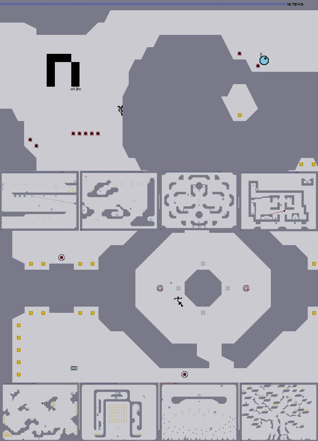

No one give me any BS answers because I don't know how reliable this site is.
I am glad at least some people are reading but they are giving me any answers.
Glenno, how do I save the file to the clipboard.
Also how do I get past the stupid newbie title
It gave me a the map is corrupted thing.
Well at the rate I'm going I'll have 10 posts in less than 10 minutes.
Can you help?
^324,492,1!7^348,492,1!7^372,492,1!7^396,492,1!7^444,516,1!7^444,516,2!2^420,515,0,-1!2^420,396,0,-1!2^421,180,0,-1!2^420,299,0,-1!9^420,108,1,1,17,4,0,0,0!9^421,107,0,1,17,4,0,0,0!9^420,106,0,1,16,4,0,0,0!9^420,86,0,1,17,3,0,0,0!9^397,84,1,1,16,4,0,0,-1!9^419,84,1,1,17,3,0,0,-1!9^397,85,1,1,16,3,0,0,-1!9^373,85,1,1,15,3,0,0,-1!9^372,87,1,1,15,4,0,0,-1!9^349,84,1,1,14,4,0,0,-1!9^325,84,1,1,13,4,0,0,-1!9^301,108,1,1,12,4,0,0,-1!9^349,84,0,1,14,2,0,0,0!9^349,36,0,1,14,1,0,0,0!9^133,59,0,1,4,2,0,0,0
^324,492,1!7^348,492,1!7^372,492,1!7^396,492,1!7^444,516,1!7^444,516,2!2^420,515,0,-1!2^420,396,0,-1!2^421,180,0,-1!2^420,299,0,-1!9^420,108,1,1,17,4,0,0,0!9^421,107,0,1,17,4,0,0,0!9^420,106,0,1,16,4,0,0,0!9^420,86,0,1,17,3,0,0,0!9^397,84,1,1,16,4,0,0,-1!9^419,84,1,1,17,3,0,0,-1!9^397,85,1,1,16,3,0,0,-1!9^373,85,1,1,15,3,0,0,-1!9^372,87,1,1,15,4,0,0,-1!9^349,84,1,1,14,4,0,0,-1!9^325,84,1,1,13,4,0,0,-1!9^301,108,1,1,12,4,0,0,-1!9^349,84,0,1,14,2,0,0,0!9^349,36,0,1,14,1,0,0,0!9^133,59,0,1,4,2,0,0,0
If anyone reads this stay on and help me or chat with me.
Help me or chat with me someone
I am not a newbie anymore hopefully.
Help!!!!!!!!!!!!!!!!!!!
I am surprised no one has posted anything on something viewed by so many people. I am writing just to see if anyone writes back.
I am starting a new topic to make people have to read less.
If anyone wants to know what is going on read the topic below this one.
I made a new topic because I felt like it. I'm sorry if it messes up the system of how things work.
If there is a way I can play levels other people made that might be helpful too.
The map data you submitted is incomplete or corrupt. Please copy and paste the map data again and resubmit.
Map Name
Category
N Version
Description
Map Data
Paste the map data generated by N into the text box above.
This is what the thing from numa says.
Map Name
Category
N Version
Description
Map Data
Paste the map data generated by N into the text box above.
This is what the thing from numa says.
Maybe I'm stupid or something but I have no clue what to do.
Does anyone have Xbox Live?
Once I make a new map (maybe a DDA) what do I do since a don't have notepad on my laptop, it's an Apple.
I kinda figured that. Is there a way you can test my map before I send it in (when it is finished).
I'm sorry I'm stupid, but I'm glad to give a few laughs. Why does the numa always say its corrupted? 
I need someone who can tolerate my stupidity and can help me so that I can figure out what to do after I create a level. For some reason N is not my talent, but it is still fun so I want to learn how to play well.
If anyone has xbox live tell me what rank you are and what is your gamer tag.
I am having the same problem and I drove glenno16 crazy I think. Now I feel bad. But someone needs to help.
What's up I'm glad you got it working. You can see my problems I have had if you go to Ned Lvl Help.
This isn't too bad is it. Have you tried any of the ninja levels yet.
[FONT=Impact] This is a fairly new site to me. I just want to see if there are any girls who aren't really boys in disguise, don't wear glasses and pocket protectors, and have had at least one boyfriend. This is more of a test than anything.
You can tell I'm bored.
I just love putting random posts here to see random things. 
I'm sorry I've done really stupid things. If you haven't died of high blood pressure (or laughter) try my DDA out. 


This one
0FJ00000000000000000000000FJ00000000000000000000000FJ00000000000000000000000FJ00000000000000000000000FJ00000000000000000000000FJ00000000000000000000000FJ00000000000000000000000FJ00000000000000000000000FJ00000000000000000000000B0000000000000000000000>00011111111100000000000:0000000001100000000000000000000011000000000000000000000100000000000000000000001000000000000000000000010000000000000000000000100000000000000000000001000000000000000000000010000000000000000000000100000000000000000000001000000000000000000000010000000000000000000000100000000000000000000000000000000000000000000000000000000000000000000000000000000000000000000000000000000000000000000000000000000000000000000000000000000000000000000000000000000|5^36,36!2^324,576,0,-1!8^324,564,3!2^768,336,-0.707106781186547,-0.707106781186547!2^756,348,-0.707106781186547,-0.707106781186547!8^132,36,1!8^156,36,1!8^180,36,1!8^204,36,1!2^564,336,0.707106781186547,0.707106781186547!8^228,36,1!8^252,36,1!2^696,552,0,-1!2^696,408,-0.707106781186547,0.707106781186547!2^588,552,0,-1!2^600,300,0.707106781186547,0.707106781186547!11^324,180,348,180!2^732,552,0,-1!2^732,504,0,-1!2^732,444,0,-1!2^732,228,0,-1!2^732,132,0,-1!2^732,108,-0.707106781186547,-0.707106781186547!0^300,492!0^300,492!0^300,492!0^300,492!0^300,492!0^300,492!0^300,492!0^300,492!0^300,492!0^300,492!0^300,492!0^300,492!0^300,492!0^300,492!0^300,492!0^300,492!0^300,492!0^300,492!0^300,492!0^300,492!0^300,492!0^300,492!0^300,492!0^300,492!0^300,492!0^300,492!0^300,492!0^300,492!0^300,492!0^300,492!0^300,492!0^300,492!0^300,492!0^300,492!0^300,492!0^300,492!0^300,492!0^300,492!0^300,492!0^300,492!0^300,492!0^300,492!0^300,492!0^300,492!0^300,492!0^300,492!0^300,492!0^300,492!0^300,492!0^300,492!0^300,492!0^300,492!0^300,492!0^300,492!0^300,492!0^300,492!0^300,492!0^300,492!0^300,492!0^300,492!0^300,492!0^300,492!0^300,492!0^300,492!0^300,492!0^300,492!0^300,492!0^300,492!0^300,492!0^300,492!0^300,492!0^300,492!0^300,492!0^300,492!0^300,492!0^300,492!0^300,492!0^300,492!0^300,492!0^300,492!0^300,492!0^300,492!0^300,492!0^300,492!0^300,492!0^300,492!0^300,492!0^300,492!0^300,492!0^300,492!0^300,492!0^300,492!0^300,492!0^300,492!0^300,492!0^300,492!0^300,492!0^300,492!0^300,492!0^300,492!0^300,492!0^300,492!0^300,492!0^300,492!0^300,492!0^300,492!0^300,492!0^300,492!0^300,492!0^300,492!0^300,492!0^300,492!0^300,492!0^300,492!0^300,492!0^300,492!0^300,492!0^300,492!0^300,492!0^300,492!0^300,492!0^300,492!2^540,180,-1,0!2^420,180,-1,0!0^324,516!0^324,516!0^324,516!0^324,516!0^324,516!0^324,516!0^324,516!0^324,516!0^324,516!0^324,516!0^324,516!0^324,516!0^324,516!0^324,516!0^324,516!0^324,516!0^324,516!0^324,516!0^324,516!0^324,516!0^324,516!0^324,516!0^324,516!0^324,516!0^324,516!0^324,516!0^324,516!0^324,516!0^324,516!0^324,516!0^324,516!0^324,516!0^324,516!0^324,516!0^324,516!0^324,516!0^324,516!0^324,516!0^324,516!0^324,516!0^324,516!0^324,516!0^324,516!0^324,516!0^324,516!0^324,516!0^324,516!0^324,516!0^324,516!0^324,516!0^324,516!0^324,516!0^324,516!0^324,516!0^324,516!0^324,516!0^324,516!0^324,516!0^324,516!0^324,516!0^324,516!0^324,516!0^324,516!0^324,516!0^324,516!0^324,516!0^324,516!0^324,516!0^324,516!0^324,516!0^324,516!0^324,516!0^324,516!0^324,516!0^324,516!0^324,516!0^324,516!0^324,516!0^324,516!0^324,516!0^324,516!0^324,516!0^324,516!0^324,516!0^324,516!0^324,516!0^324,516!0^300,492!2^372,192,-1,0
0FJ00000000000000000000000FJ00000000000000000000000FJ00000000000000000000000FJ00000000000000000000000FJ00000000000000000000000FJ00000000000000000000000FJ00000000000000000000000FJ00000000000000000000000FJ00000000000000000000000B0000000000000000000000>00011111111100000000000:0000000001100000000000000000000011000000000000000000000100000000000000000000001000000000000000000000010000000000000000000000100000000000000000000001000000000000000000000010000000000000000000000100000000000000000000001000000000000000000000010000000000000000000000100000000000000000000000000000000000000000000000000000000000000000000000000000000000000000000000000000000000000000000000000000000000000000000000000000000000000000000000000000000|5^36,36!2^324,576,0,-1!8^324,564,3!2^768,336,-0.707106781186547,-0.707106781186547!2^756,348,-0.707106781186547,-0.707106781186547!8^132,36,1!8^156,36,1!8^180,36,1!8^204,36,1!2^564,336,0.707106781186547,0.707106781186547!8^228,36,1!8^252,36,1!2^696,552,0,-1!2^696,408,-0.707106781186547,0.707106781186547!2^588,552,0,-1!2^600,300,0.707106781186547,0.707106781186547!11^324,180,348,180!2^732,552,0,-1!2^732,504,0,-1!2^732,444,0,-1!2^732,228,0,-1!2^732,132,0,-1!2^732,108,-0.707106781186547,-0.707106781186547!0^300,492!0^300,492!0^300,492!0^300,492!0^300,492!0^300,492!0^300,492!0^300,492!0^300,492!0^300,492!0^300,492!0^300,492!0^300,492!0^300,492!0^300,492!0^300,492!0^300,492!0^300,492!0^300,492!0^300,492!0^300,492!0^300,492!0^300,492!0^300,492!0^300,492!0^300,492!0^300,492!0^300,492!0^300,492!0^300,492!0^300,492!0^300,492!0^300,492!0^300,492!0^300,492!0^300,492!0^300,492!0^300,492!0^300,492!0^300,492!0^300,492!0^300,492!0^300,492!0^300,492!0^300,492!0^300,492!0^300,492!0^300,492!0^300,492!0^300,492!0^300,492!0^300,492!0^300,492!0^300,492!0^300,492!0^300,492!0^300,492!0^300,492!0^300,492!0^300,492!0^300,492!0^300,492!0^300,492!0^300,492!0^300,492!0^300,492!0^300,492!0^300,492!0^300,492!0^300,492!0^300,492!0^300,492!0^300,492!0^300,492!0^300,492!0^300,492!0^300,492!0^300,492!0^300,492!0^300,492!0^300,492!0^300,492!0^300,492!0^300,492!0^300,492!0^300,492!0^300,492!0^300,492!0^300,492!0^300,492!0^300,492!0^300,492!0^300,492!0^300,492!0^300,492!0^300,492!0^300,492!0^300,492!0^300,492!0^300,492!0^300,492!0^300,492!0^300,492!0^300,492!0^300,492!0^300,492!0^300,492!0^300,492!0^300,492!0^300,492!0^300,492!0^300,492!0^300,492!0^300,492!0^300,492!0^300,492!0^300,492!0^300,492!0^300,492!0^300,492!0^300,492!0^300,492!2^540,180,-1,0!2^420,180,-1,0!0^324,516!0^324,516!0^324,516!0^324,516!0^324,516!0^324,516!0^324,516!0^324,516!0^324,516!0^324,516!0^324,516!0^324,516!0^324,516!0^324,516!0^324,516!0^324,516!0^324,516!0^324,516!0^324,516!0^324,516!0^324,516!0^324,516!0^324,516!0^324,516!0^324,516!0^324,516!0^324,516!0^324,516!0^324,516!0^324,516!0^324,516!0^324,516!0^324,516!0^324,516!0^324,516!0^324,516!0^324,516!0^324,516!0^324,516!0^324,516!0^324,516!0^324,516!0^324,516!0^324,516!0^324,516!0^324,516!0^324,516!0^324,516!0^324,516!0^324,516!0^324,516!0^324,516!0^324,516!0^324,516!0^324,516!0^324,516!0^324,516!0^324,516!0^324,516!0^324,516!0^324,516!0^324,516!0^324,516!0^324,516!0^324,516!0^324,516!0^324,516!0^324,516!0^324,516!0^324,516!0^324,516!0^324,516!0^324,516!0^324,516!0^324,516!0^324,516!0^324,516!0^324,516!0^324,516!0^324,516!0^324,516!0^324,516!0^324,516!0^324,516!0^324,516!0^324,516!0^324,516!0^300,492!2^372,192,-1,0
Stupid word wrap
I figured out how to post my levels in this thing, the 1st level is not a DDA it is a Door Eerie level.
I GOT IT ON TEST LEVEL blackwolf84
If you have Xbox Live and you play it a fairly good amount (3 hours a dayish 3 days a weekish) then message me back and tell me your gamer tag and rank in Halo 2. If you don't have Xbox Live, I reccomend getting it because it is like having a lot of people sitting next to you playing at the same time.
At first it is a DDA. After you stop for the first time, hold right. When you stop completely the second time, do the level manually. Then at the end just before you touch the bounce block, it becomes a DDA again.
Is there a way to play levels that people send to you in anywhere other than edit mode.
In my opinion DDA is the best because it takes no effort and no thinking power. I don't have either of these traits. If you want action play a war game. If you want puzzles go back to tetris.
You are totally crazy if you want to spend the rest of your life alone, playing this game as a hermit who sits in front of the computer. Maybe you have a life but you must not have a very good one if you don't want to get married.
If anyone is new, it's probably me. I joined at the end of May but reading this thread is pure comedy. I think that an IQ test would be mean because I'm too stupid to pass it. I would not ever get in to this hilarious site. Just because of all that doesn't mean I put no. I did put yes because if a whole bunch of people who knew each other just rated 5s across the board, there would be a perfect ninja all the way across with just a ninja with a door right next to it. Sure some of my levels that I have made are pretty stupid, but I only submitted one of them and called it Simple DDA. People should definitely put some thought into what they create and test the levels over and over again. Now because I'm so stupid, my brain will explode from writing that huge essay.
Alex Trebek There's whole lot more Jeopardy fans than Millionare fans. If Trebek could get his mustache back he'd be really rouged...  Did I just say that?
Did I just say that?  I'm getting confused.
I'm getting confused. 
Master Chief or James Bond?
Did I just say that? I'm getting confused. Master Chief or James Bond?
Oops sorry, didn't read past the first past the first page. But Misty. Now back to my question Master Chief or James Bond
Didn't mean to double post. Sorry.
Didn't mean to double post. Sorry.
And you do that how?
I seem to be very bad at the last levels pretty much everything except for column 1 up to episode 7. I need a friend who would be willing to not blow their brains out every time I ask for help.
Quoteblackwolf is a definite noob
I am a noob. Come get your entertainment from me blackwolf84
QuoteI just learned how to do this, sad ain't it.
I'm very stupid and I'll never get past episode 7.
Thank you very much. That was the help I needed. I would have never thought of that. Thank you.
Quoteblackwolf84 is a definite noob
N is a pretty good game, but it doesn't compare to the 3D world of Halo 2 or Metal Gear Solid 3:Snake Eater. I'll play it until something really good comes out that I can afford (Xbox 360). N will probably just get boring after a while but I have to admit. It is fun reading most of the threads in the Thrash and Bash section of this forum. I don't even play N that much. I have only beaten 1 episode in each column and I don't really care that much. It is fun to beat a game but you can only do so much in a 2D game. I will just go with the flow. 
Read my ideas in Bash and Thrash
Read my ideas in Bash and Thrash
If you vote say a response.
A definite 4. I am good compared to my friends. Compared to people on this forum, I'm a pony.
LV: Edited to keep on the safe side.
LV: Edited to keep on the safe side.
I use a whole load of shift.
Found out from my friends at school. Came here learned that you guys were addicted to the game. I am scarred for life.
Definitely seen sex. Internet and TV. Even though I'm just 14. Anime, hentai, oral, frontal, anal.
[SIZE=1]Oh yeah[SIZE=1]
[SIZE=7]Gotta say sex is so great.[SIZE=7]
[SIZE=1]Oh yeah[SIZE=1]
[SIZE=7]Gotta say sex is so great.[SIZE=7]
QuoteFirst seen when I was 10: Deuce Bigalow: Male Gigalo
Those gay little (checks section) fucking zap drones always take me out. Sometimes I think its my sexiness that draws those bitches to me.
Rockets are plain out annoying little pain in the asses. Speaking of which, last night...

Rockets are plain out annoying little pain in the asses. Speaking of which, last night...
QuoteIt's stretching
QuoteWant to know why I'm nicknamed 0010 1/2
Fucking gaylords shouldn't do that. It makes no fucking sense. Gay little fucking shits.
QuoteI like to slap bitches, I like to slap hos.
Us fat people who weigh over 100 pounds gotta eat. Of course I weigh under 120.
Can you get addicted to a 2D game? Some people play this game 23/7. The other hour is when they are online on the forums. If you have beat all the levels by yourself, without cheats, no help whatsoever, then you should a) get a life, get into someone elses, or c) ruin someone elses. Don't play this fucking game all the time. If you play this game too much maybe you should break your computer.
get into someone elses, or c) ruin someone elses. Don't play this fucking game all the time. If you play this game too much maybe you should break your computer.QuoteWould you like a shit of paper?
If I have offended you people message me and I'll say I'm sorry. Other than that, FUCK you all.
I just play to chat with people. Other than that screw the game.
By the way, what is the warn 10 % thing mean.
Uh oh, did I do something bad. Can I get it removed?
By the way, what is the warn 10 % thing mean.
Uh oh, did I do something bad. Can I get it removed?
I put no but it would definitely be nice to have a couple shots at life.
Sorry if I offended some people. I was in a really really bad mood. You know, the one where people are about to jump off a cliff into a canyon so that you are severly injured almost to death but not dead. Yeah you know what I mean. Although I still think Halo 2 is better than this game.
For the heck of it is definitely because you have nothing better to do and you are sick of reading and sleeping.
Well I haven't played far enough but I must say that it doesn't matter. People have beaten the whole game so it doesn't make too much of a difference.
I have never met a person who has xbox live but doesn't have Halo 2. Trust me if you have xbox live...
just because you have Xbox Live, it doesn't mean you have Halo 2
I would say the first one but that wouldn't be very honest. Of course it is pretty close to being honest.
Those are some great maps. I bet you can beat at least one of them.
blackwolf94
hqckwwoolf8888884(nose)
jmu,ohc569l.ommkvt(ear)
blacksolf84(toungue)
bblackwolf84(elbow) yeah!?
hqckwwoolf8888884(nose)
jmu,ohc569l.ommkvt(ear)
blacksolf84(toungue)
bblackwolf84(elbow) yeah!?
As you can see, I am so darn bored. Let's see how stupid you think I am in general or for posting this poll.
By the way I voted below the chart. You don't have to copy me. Tell me why you vote the way you do.
Once again, go Halo 2. Yaaaaaaaay
One true god...for those of you who don't know, his name is God. Some people are just plain stupid.
How do you become moderator or admin?
QuoteDefinitely 110-120.
Trib is probably the closest. Either that or glenno14. I may act stupid but its mostly to see what others do. I think I almost killed glenno14 one time.
(glenno14)
QuoteI seriously think talking to this guy is giving me high blood pressure...
There are way too many people so no
Uhh I don't get it.
You are a loser and a gaylord and maybe you should look the word girl up in a dictionary.
I can help you with the picture. Go to MY CONTROLS and find the change signature button. Look for a picture on google.
Seriously, brickman is a lot harsher than Kablizzy. brickman seems to flame me at every chance he gets. They should change the topic to brickman is harsh on noobs.
Okay, if you really need help just go to the high scores and watch the replays of other people and do what they do. Although sometimes it gets a little too advanced and they dodge a monster very difficultly or they time something just right.
Tsukatu I love you. No I just wanted to say that because it rhymed. But seriously I'm not that stupid and I want to see how many of you change your answer.
Just wondering what kinds of games people like. By the way, go pong, yeah.
Also go Halo 2.
Also go Halo 2.
I personally like Off-Topic and Tests and Inquiries. What do you like? By the way say something if you vote. I hate it when people vote but don't say anything. What's the point?
How about Kingdom Hearts? That is a cartoon based game and it isn't that bad.
Then plan ahead. Look at the 5 levels before you play them. Or try them in time trial or whatever it is called.
I have tried over a kajillion times but I still can't get it. Any suggestions?
Somehow I beat it but now I need help on Level 3 same episode. I am so close to getting a new color.
Somehow I beat it but now I need help on Level 3 same episode. I am so close to getting a new color.
How do you people get so far in the levels? I still can't get past episode 9 level 4.
Never mind, I just beat the level.
I have seen some people with different colored names. I was just wondering how they did that.
I know it is not impossible but someone tell me what the best way of doing it would be.
Never mind...practice makes perfect. Remember that everyone.
Never mind...practice makes perfect. Remember that everyone.
Rock, rap. Why not make a poll?
I agree, why isn't there a 0 column for noobs. Anyway, I got 2.5 of them done.
I was thinking of having some telports but I have no clue how to make them. My quote at the bottom explains it all!
I might get one soon, but pink rules. Thats if you have a firm stance with your sexuality.
Is this about ghosts and spirits by the way? If so, I don't believe in ghosts. They are just figments in people's imagination that sometimes make a good movie or story. These ghosts are where people get the picture of them. Some people think that there are ghosts so much that they actually go crazy. If this is not about ghosts, then I think aliens are real but don't look like the way we all picture them to be. For all we know, there could be aliens, that aren't developed enough to travel here. They might think that we are aliens and make jokes about us. Whatever, I barely even know what this topic is about.
Your mission:
Make a DDA that would get a 4 or higher without using rockets or launch pads.
Has this ever been done?
Make a DDA that would get a 4 or higher without using rockets or launch pads.
Has this ever been done?
Someone tell me at least how to get part of this done. Once I get to the middle, I cant get out.
How is this help if I can't save my hard work of Episode 24 Level 3.
Gun Nac was a pretty good NES game. I loved Superspike V'Ball
289
290
291
292
Wow, this is my favorite game. Once this topic becomes old, I'll make a new topic that goes to 1,000,000,000,000,000,000,000,000,000,000,000,000,000,000,000,000,000,000,000,000,000,000,000,000,000,000,000,000,000,000,000,000,000,000,000,000,000,000,000,000,000,000,000,000,000,000,000,000,000,000,000,000,000,000,000,000,000,000,000,000,000,000,000,000,000,000,000,000,000,000,000,000,000,000,000,000,000,000,000,000,000,000,000,000,000,000,000,000,000,000,000,000,000,000,000,000,000,000,000,000,000,000,000,000,000,000,000,000,000,000,000,000,000,000,000,000,000,000,000,000,000,000,000,000,000,000,000,000,000,000,000,000,000,000,000,000,000,000,000,000,000,000,000,000,000,000,000,000,000,000,000,000,000,000,000,000,000,000,000,000,000,000,000,000,000,000,000,000,000,000,000,000,000,000,000,000,000,000,000,000,000,000.
290
291
292
Wow, this is my favorite game. Once this topic becomes old, I'll make a new topic that goes to 1,000,000,000,000,000,000,000,000,000,000,000,000,000,000,000,000,000,000,000,000,000,000,000,000,000,000,000,000,000,000,000,000,000,000,000,000,000,000,000,000,000,000,000,000,000,000,000,000,000,000,000,000,000,000,000,000,000,000,000,000,000,000,000,000,000,000,000,000,000,000,000,000,000,000,000,000,000,000,000,000,000,000,000,000,000,000,000,000,000,000,000,000,000,000,000,000,000,000,000,000,000,000,000,000,000,000,000,000,000,000,000,000,000,000,000,000,000,000,000,000,000,000,000,000,000,000,000,000,000,000,000,000,000,000,000,000,000,000,000,000,000,000,000,000,000,000,000,000,000,000,000,000,000,000,000,000,000,000,000,000,000,000,000,000,000,000,000,000,000,000,000,000,000,000,000,000,000,000,000,000,000,000.
Alberquerque-Weird Al
If we could change the subject to Star Wars games, then Star Wars: Knights of the Old Republic, I love that game for Xbox. If Halo 2 is an 11/10 then Star Wars KOTOR is 10/10. Good RPG.
Have fun there. Good luck.
Must have this topic on top of list...Sorry about double posting.
I also thought that Adventure Island wasn't that bad.
QuoteGo Pong!
I would kill brickman to put an end to his flaming people.
Can anyone do the level and then give me advice.
If you want to smoke, smoke all you want. Just hurry up and die before we break a hole in the ozone. I personally don't want to die of others mistakes. Lung cancer or great life ahead? Decisions, decisions.
Right now I'm listening to Sonata in A minor by George Frederick Handel.
It's for our music class.
http://members.cox.net/dvigus/8bandmid/W8ra116.mid
It's for our music class.
http://members.cox.net/dvigus/8bandmid/W8ra116.mid
500 deaths later...Yes I finally beat it. I beat episode 24. Yeahhhhhhh!!!!!! I really need to stop drinking coffee. Just kidding.
Why did he just start posting now? He can't have been that far unless he could get it back fast.
Sorry, it's just that I get frustrated when it takes me longer than a day to figure out 1 level.
QUOTE (nevermore @ Jun 7 2005, 06:22 AM)
Uh... None of the above?
Breasts don't interest me that much, really.
Nevermore, (looks down at feet) I am really disapointed in you. I can't believe you seriously. I like anything as long as they aren't saggy or flat or bloated if you know what I mean.
I'd be a jedi and be more rightous than yoda. By the way, if you have ever played Knights of the Old Republic, then I would be Revan with Bastila at my side not just for strength or guidance but for...no, no, stop. Must not get another warn. Although if I do, they say 3rd time is a charm. Hmmmmmmmmmm.
Here is my response translated at nevermore's site.
0100100100100000011101110110000101101110011101000010000001110100011011110010000001101000011000010111011001100101001000000111001101100101011110000010000001110111011010010111010001101000001000000101100101100001011100110110110101101001011011100110010100100000010000100110110001100101011000010110101101100101
0100100100100000011101110110000101101110011101000010000001110100011011110010000001101000011000010111011001100101001000000111001101100101011110000010000001110111011010010111010001101000001000000101100101100001011100110110110101101001011011100110010100100000010000100110110001100101011000010110101101100101
To change the speed and make telports:
Sorry about double-posting!
Rhythm
If smoking is so addictive, don't do it in the first place. There are other things that are addictive (i.e. snowboarding, Halo 2, N, etc.). No clue what is so great about being high. You're just digging a grave for yourself. The more you smoke, the deeper it goes. Also, do you really want your lungs that awful color brown. If you smoke, just die fast cause I don't every want to see you.
fast cause I don't every want to see you.As Echarin doubled over in pain after provoking Ligers, an AT-AT walker walked. "From earth came stuff" said his girlfriend Marzipan. Marzipans brother, norbostronoyityo, wasn't present. A strange inanimant object? Meanwhile, Tsukatu's ass erupted again, (Eeeeeewwww!) leaving a distinct cloud of greenish gas over Denmark which boldly went away, sooner or (more likely) never. This was because everybody hated the way that Maniac always competed with indigestion in an infatuated attempt to take over the whole bowl of lard. This was an act of grievance, for obvious desires to annihilate were evident. In response, the Justice League spanked him until his butt was dead. He then apoligized to Batman. The spanking influenced Maniac to undergo extreme plastic surgery to repair his tear ducts. Yes, tear ducts. It's amazing, really, considering how hard is it for tear ducts to eject human liquids other than what Brickman pours in his wrinkly oversized super cow outfit. Oh noes! mvboli is being abused by Maniac, the evil genius of Zimbabwe. mvboli, in pain, sneezed repeatedly before seeing Maniac's expression of pure malice and rage. In a move unforseen,mvboli gets undressed for blackwolf because of where they forgot closing tags. Blackwolf loved it
I use my forehead. Just kidding, I use my middle finger. That way I can play with one hand.
As Echarin doubled over in pain after provoking Ligers, an AT-AT walker walked. "From earth came stuff" said his girlfriend Marzipan. Marzipans brother, norbostronoyityo, wasn't present. A strange inanimant object? Meanwhile, Tsukatu's ass erupted again, (Eeeeeewwww!) leaving a distinct cloud of greenish gas over Denmark which boldly went away, sooner or (more likely) never. This was because everybody hated the way that Maniac always competed with indigestion in an infatuated attempt to take over the whole bowl of lard. This was an act of grievance, for obvious desires to annihilate were evident. In response, the Justice League spanked him until his butt was dead. He then apoligized to Batman. The spanking influenced Maniac to undergo extreme plastic surgery to repair his tear ducts. Yes, tear ducts. It's amazing, really, considering how hard is it for tear ducts to eject human liquids other than what Brickman pours in his wrinkly oversized super cow outfit. Oh noes! mvboli is being abused by Maniac, the evil genius of Zimbabwe. mvboli, in pain, sneezed repeatedly before seeing Maniac's expression of pure malice and rage. In a move unforseen,mvboli gets undressed for blackwolf because of where they forgot closing tags. Blackwolf loved it, as did his impression of a
As Echarin doubled over in pain after provoking Ligers, an AT-AT walker walked. "From earth came stuff" said his girlfriend Marzipan. Marzipans brother, norbostronoyityo, wasn't present. A strange inanimant object? Meanwhile, Tsukatu's ass erupted again, (Eeeeeewwww!) leaving a distinct cloud of greenish gas over Denmark which boldly went away, sooner or (more likely) never. This was because everybody hated the way that Maniac always competed with indigestion in an infatuated attempt to take over the whole bowl of lard. This was an act of grievance, for obvious desires to annihilate were evident. In response, the Justice League fucked him until his butt was dead. He then apoligized to Batman. The spanking influenced Maniac to undergo extreme plastic surgery to repair his tear ducts. Yes, tear ducts. It's amazing, really, considering how hard is it for tear ducts to eject human liquids other than what Brickman pours in his wrinkly oversized super cow outfit. Oh noes! mvboli is being raped by Maniac, the evil genius of Zimbabwe. mvboli, in pain, sneezed repeatedly before seeing Maniac's expression of pure malice and rage. In a move unforseen,mvboli gets undressed for blackwolf because of where they forgot closing tags. Blackwolf loved it, as did his impression of a raging porn star who liked ignoring the three word limit. Blackwolf said, "Hey,
I voted Paper Mache' Battery in the wireless pudding fish although I'm too stupid to figure out what it means. It is just I heard this voice saying, "Vote the last choice or glenno14 is going to kill you."
As Echarin doubled over in pain after provoking Ligers, an AT-AT walker walked. "From earth came stuff" said his girlfriend Marzipan. Marzipans brother, norbostronoyityo, wasn't present. A strange inanimant object? Meanwhile, Tsukatu's ass erupted again, (Eeeeeewwww!) leaving a distinct cloud of greenish gas over Denmark which boldly went away, sooner or (more likely) never. This was because everybody hated the way that Maniac always competed with indigestion in an infatuated attempt to take over the whole bowl of lard. This was an act of grievance, for obvious desires to annihilate were evident. In response, the Justice League fucked him until his butt was dead. He then apoligized to Batman. The spanking influenced Maniac to undergo extreme plastic surgery to repair his tear ducts. Yes, tear ducts. It's amazing, really, considering how hard is it for tear ducts to eject human liquids other than what Brickman pours in his wrinkly oversized super cow outfit. Oh noes! mvboli is being raped by Maniac, the evil genius of Zimbabwe. mvboli, in pain, sneezed repeatedly before seeing Maniac's expression of pure malice and rage. In a move unforseen,mvboli gets undressed for blackwolf because of where they forgot closing tags. Blackwolf loved it, as did his impression of a raging porn star who liked ignoring the three word limit. Blackwolf said, "Hey, you can't do your mom while
What can I say? I had to check it. Stupid voice in my head still won't go away.
QUOTE (glenno14)
QUOTE (glenno14)
vote the damn battery option blackwolf!DOOOOOOO ITTTT!!!dont make me use my telepathetic powers on you!
375
376
377
378
379
370
376
377
378
379
370
Time causes rust to occur and kill the beasts. My answer is time not rust.
What's the best you got? Who can flame me the most? I bet I can dish out anything anyone's got. Hopefully, Suki doesn't lock this but if it helps at all, my two favorite people are Tsukatu and formica because of The Improbability Drive. Oh yeah, and n00b. He's hilarious and he goes to my school. So does l3ft b3hindx and ballrinbreak and waffles1234 and Mr_Cranky. Check out the Heist 1, 2, and 3 made by Mr_Cranky. Let the flaming begin.
I happen to think this isn't a bad idea. It could work and you could have teams of two across the world online. That would be cool. If they could do that for Halo 2...
No crime therefore no revenue for the city
Why not?
You just hate me cuz I'm black. Just kidding. Why do you want to spoil my fun? (and brickman's)
I have heard red wine isn't that bad.
OMG, why are people so boring right now. Seriously, someone give me something or else I won't ever leave. I know you want me gone as much as n00b who can barely spell his name.
Well how would I know? I have only drank a small sip of wine twice. I'm 14 so what do you expect. By the way, why can't people just not smoke or drink or commit suicide while taking others with them. I just don't get it.
Sorry, a second big bang.
How do you beat it? Is it possible?
Let them have their fun. It's only a game, right?
Why don't you just fix the system so that no one can vote unless you make a certain number of good maps. That way you don't have n00bs voting down good maps.
Or, have a system where some people's votes count more than others, depending on some factor.
Or, have a system where some people's votes count more than others, depending on some factor.
I don't get a word you just said. Any way of putting easier?
Does that mean you are bisexual or a transvestite or what? My head hurts. And while I'm at it what does hermaphrodite mean?
Why do you write -TMT rather than make a signature like mine?
You can also have things like: your map does not get posted unless three of the elites says it is okay.
Comparing it to Clans in Halo 2:
have a ranking system (peon, member, staff, overlord)
have a warning system (3 strikes and you get banned for a day or two)
have a ranking system (peon, member, staff, overlord)
have a warning system (3 strikes and you get banned for a day or two)
I don't want to get another warning, I can't afford it, but it's just a game. How many times have I said that?
I think they should make a new version that has a way to extend the maps out farther.
Can't arachnid try to get all set up over the summer since there is no school. Wait, how old is arachnid or anyone at all.
I still think that they should make a v 1.5 with co-op mode.
Wow, maybe I am stupid making a topic about myself but I was bored last night. BTW I agree with shgoaghoiag. He understands me.
Titanium coating the knife rendering the lead useless.
Ninja man's leg exploding. Yeahhhh!!!!!!! It needs weapons. Arnold.
Oh noes! mvboli is being raped by Maniac, the evil genius of Zimbabwe. mvboli, in pain, sneezed repeatedly before seeing Maniac's expression of pure malice and rage. In a move unforseen, mvboli gets undressed for blackwolf because of where they forgot closing tags. blackwolf loved it, as did his impression of a raging porn star who liked ignoring the three word limit. blackwolf said, "Hey, what is THIS?! You can't do your mom while following the rules and secretly modifying my overlooked post," while great_sea flew away from Bavaria carrying a pink llama illegally in a giant purse. The customs police were baffled by the size of this insane thread and Keron Cysts's collection of wireless paperclips (they're invisible). The earth got sold to a faceless mulitnational conglomerate before tubgirl arrived, scaring the pants off nevermore and his assembled cadre, who inadvertentely proliferated angry hermaphrodites with plenty of wax. Without proper facilities, Kablizzy created a horde of masterpieces which were previously outlawed in Bangladesh, and then did
(a person on this forum)
(a person on this forum)
Replying to the first post:
I think the makers should have a co-op section of different levels.
[COLOR=green]Co-op
I think the makers should have a co-op section of different levels.
[COLOR=green]Co-op
I'll fix that.
No weapons. Ninjas mean simplicity and staying under cover. This means only 3 buttons and staying away from the robots.
I don't really have any thing else to say.
I voted yes.
(reconsidering)
Now that I think about it, Mare and Raigan probably aren't a couple because they wouldn't care about it online 'cuz no one knows them.
(reconsidering)
Now that I think about it, Mare and Raigan probably aren't a couple because they wouldn't care about it online 'cuz no one knows them.
granted, but everyone dies of laughter because of not being able to breathe.
I wish I had an IQ between 120 and 135.
BTW, my grades just came in, I got:
8th grade
Spanish I A
Advanced Band A
Physical Science A
Accelerated English I A
P.E. A
Geometry A-
History A+
I wish I had an IQ between 120 and 135.
BTW, my grades just came in, I got:
8th grade
Spanish I A
Advanced Band A
Physical Science A
Accelerated English I A
P.E. A
Geometry A-
History A+
I'm surprised Maniac doesn't have very many votes. I voted nevermore, but after seeing who voted for who, I would have wanted to vote maniac or glenno14.
Wait a second, no one can take my place as retard.
Spam stands for Stuff Posing As Meat.
Stuff Posing As Meat
Stuff Posing As Meat
You are going to meet people in your life like that a lot. Just ignore them so you have no reason to get in trouble. If that doesn't work, tell the teacher that he's being annoying. You won't get in trouble. BTW, I live in California, what city do you live in?
I am not going to start a new topic but a new post. How do you get past the minefield of Episode 67 Level 4?
Wow, this sounds like a mix between Halo 2 and Shogun: Total War. Props to this idea.
There is a lot of gold on the first level.
Wow, I can't believe everyone made such a big deal out of two people of the whole forum. Just let it go. What am I saying? Why am I ruining the fun? That's not my attitude. Ummmmmm, ummmmmmm.
*looks for back exit*
*looks for back exit*
Dude, Spork means stuff posing or read (the) kool (one)
Stuff Posing As Meat
Stuff Posing As Meat
I had the SNES9x for a while
Apple Emulation
Apple Emulation
Dude Red Reamer, appear online.
Never Mind.
Can anyone help me with the Web Riddler?
If so PM me.
Never Mind.
Can anyone help me with the Web Riddler?
If so PM me.
dactylography
It's asteroids with moving.
Is the definition of spamming posting double, triple, quadruple, quintuple, sextuple, heptuple, octuple, nontuple, dectuple, etc. Or is it posting back and forth with your friend about a topic?
Granted but he makes a wish and destroys everything because of this.
I wish I had skillz better than trib.
I wish I had skillz better than trib.
I'm gonna sing the song/though I don't know how the song goes (wack)
Dude, practice makes perfect.
I like 5, but I accidentaly voted 6 for some reason. Clicking too fast.
6/10 Too fast
It is a good site and I like it. People should go to it.
You have Xbox Live Red Reamer? If so, send a friend request to BlackWolf84. If not, then those maps cost 20 bucks.
Don't be so mean, that's brickman's job.
You can tell how bored I am.
Let's chat in Binary Code
010110010110111100101100001000000111100101101111001011000010000001111001011011110010000100100000010010010010011101101101001000000110000100100000011001110110000101101110011001110111001101110100011001010111001000100001
Let's chat in Binary Code
010110010110111100101100001000000111100101101111001011000010000001111001011011110010000100100000010010010010011101101101001000000110000100100000011001110110000101101110011001110111001101110100011001010111001000100001
I agree with Little Viking
I think that all of us should love each other and be one big happy family.
*punches person*
*in background*(Go away stupid hippie)
*punches person*
*in background*(Go away stupid hippie)
0100100100100000011000010110110001110010011001010110000101100100011110010010000001101000011000010111011001100101001000000110110101111001001000000110111101110111011011100010000001101100011000010111001101100101011100100111001100100000011100110110010101110100001000000111010101110000001011100010000001000010011101010111010000100000011011010111100100100000011101100110010101110010011100110110100101101111011011100010000001101111011001100010000001110100011011110111001001110100011101010111001001100101001000000110100101110011001000000110111001101111011101000010000001101100011000010111001101100101011100100111001100101110001000000100100101110100001000000110100101110011001000000110000100100000011100000110100101110011011101000110111101101100001011100010000001000010011101010111010000100000011011010110111101110011011101000010000001101111011001100010000001111001011011110111010100100000011000110110000101101100011011000010000001101001011101000010000001100001001000000111001001101111011000110110101101100101011101000010000001101100011000010111010101101110011000110110100001100101011100100010111000100000010011110110100000100000011000010110111001100100001000000111010001110010011110010010000001101110011011110111010000100000011101000110111100100000011011010110000101101011011001010010000001101000011101010110011101100101001000000111000001100001011100100110000101100111011100100110000101110000011010000111001100100000011011000110100101101011011001010010000001001001001000000110010001101111001011100010000001010100011010000110010100100000011011000110111101100001011001000010000001110100011010010110110101100101001011100010111000101110
I am officially stuck on Phase 6. I just can't take enough steps. I have a one-track mind.
If you know what the password is, PM me at Web Riddler because there are two steps to it.
Why can't all games be for free?
Question: Sex?
Answer: Yes, please.
Male.")
Not James Bond. Austin Powers
Answer: Yes, please.
Male.
Not James Bond. Austin Powers
I think a skull. 6/10.

Oct.
110157142142154145163077
110157142142154145163077
010011110110100000100000011011110110101101100001011110010010110000100000011001110110111100100000011101000110111100100000010101110110010101100010001000000101001001101001011001000110010001101100011001010111001000100000011001010111011001100101011100100111100101101111011011100110010100101110001000000100000101101110011001000010000001110000011011110111001101110100001000000110110001101111011101000111001100101110
My favorite movie of all time was Pirates of the Carribean and we played the songs in band.
They need to make map packs.
Why not try downloading N again?
How do people have the Ninja themed sigs?
Once you try it, it gets easy.
Keron, you said my warnings would go away after a while. I want them to leave. I have been good, right.
*Coughlol*
Take screenshots of N (Print Screen). Then cut and paste them into an expensive image program like photoshop. Then they viguriously edit them to make them look cool. The same for avatars, and comics.
EDIT: 50th post, yay, not yay, its nothing. really.
Expensive?!
This isn't that dead. I went to the last post on News.
01011001011001010110000101101000001011000010000001100010011101010111010000100000011110010110111101110101001000000110001101100001011011100010000001110011011101000110100101101100011011000010000001100011011010000110000101110100001011100010000001010111011010000110100101100011011010000010000001101001011100110010000001110111011010000110000101110100001000000100100100100000011001000110111100101100001000000110001101101111011011100111001101101001011001000110010101110010011010010110111001100111001000000100100100100000011000110110000101101110001001110111010000100000011001110110010101110100001000000111000001100001011100110111010000100000010100000110100001100001011100110110010100100000001101100010000001110100011011110010000001110011011000010111011001100101001000000110110101111001001000000110110001101001011001100110010100101110
But Keron said it would go away.
I got 140ish using this site.
http://www.speedanywhere.com/hispin.html
I thought I had a heck of a lot faster.
http://performance.toast.net/results.asp?t...&loadtime=2.316
Much Better.
Near 1100.
http://www.speedanywhere.com/hispin.html
I thought I had a heck of a lot faster.
http://performance.toast.net/results.asp?t...&loadtime=2.316
Much Better.
Near 1100.
If you have the pink one or a brightly colored one, you tend to have faster reflexes. This is probably due to the fact that bright colors stimulate the mind a lot more than something like that ugly throw-up color-olive.
Yeah me too. and I think that I have made lots of questions and coments in this 16 day old topic. So, it's not just me. And, to maestro, yes when I first started out, I would do things like go to a topic a year old on accident. This is the first forum I have ever seen. Am I doing that bad?
Then I thank maximo. Very much. I will be good and won't go on any rages like the only one time I did anything. And the other thing, please don't bring that up.
Alrighty, then let's help this post out.
Anything below this line is about n_v1.4 making it a dead topic.
------------------------------------------------------------------------------------------------------------
Anything below this line is about n_v1.4 making it a dead topic.
------------------------------------------------------------------------------------------------------------
Insane means not acting as others do in order to gain attention. This is because you suck at getting attention other ways like being funny or being very serious but not by being a 
or being very serious but not by being a *coughnevermorecough*
If you don't want anymore, I suggest you stay away from Bash and Thrash. That's where I got my warns.
8.000000000001/10.
How 'bout this one?

How 'bout this one?
Hey trog, one for wolfy. Special qualities: spamming.
P.S. In DND, Initiative is usually 12-19.
P.S. In DND, Initiative is usually 12-19.
Wait, emotion...
*looks for it*
where did it go?
*looks down*
I missed it didn't I. Darn.
I'm going back to Web Riddler 2.
*looks for it*
where did it go?
*looks down*
I missed it didn't I. Darn.
I'm going back to Web Riddler 2.
I finally beat Stress Test 2 and I have to beat this level. Any suggestions?
I bet some people see the maps and just play them but not rate them.
I'm sorry to hear that. I'm busy with all of the Web Riddler's. I think me and jaxpylon who I think is makron, did well.
Is there a way to make your own, N-based game for yourself without spending any money? That would be nice.
For some reason it's not downloading.
Are you on a Mac? Maybe it's macs.
Try mine. I'd help you out.
Web Riddler 2
Web Riddler 2
What is code?
Seriously, how do people staple their finger?
I think it would be scary thinking you can only go through this door once.
I could use some help on Sibilant S. 67 4?
Once again, do people staple their fingers for fun or because they thought it was nail paint?
Granted, but nobody likes your wishes and bans you.
I wish this wish wouldn't be corrupted!
I wish this wish wouldn't be corrupted!
OMG!
:wide eyes:
:wide eyes:
I want to try something I read in a post. I'm going to find out if it works...
It makes me mad. I thought bombshelter was annoying.
I gave up with that level and beat the whole 90's column. I got the secret but I still have episodes 67-70, 74-89 to go.
Can someone help with 67-4 Sibilant S?
Thx!
I don't think there will be time machines because if there were wouldn't some idiot screw up and accidentally mess it up for the rest of us? Unless...no, not Bill Gates, *mutters winning big at the racetrack*
*mutters cheater*
*mutters cheater*
But then, you'll always have those n00bs who will use it to make an impossible level.
*sigh*
*sigh*
Hey, nevermore, why don't you try out Web Riddler 2?
Oh yeah, and there will be those jerks who rate terribly bad maps high.
Oh yeah, and there will be those jerks who rate terribly bad maps high.
If my mom and dad are home 1-2. If my mom's home 1-3. If no one is home 10 minutes.
Either mint chip or Caramel caribou.
I hate some of my older maps but I haven't deleted a single one. I think it shows your growth throughout your mapmaking experience.
What if people were to get a certain amount of votes depending on how good their maps are?
If you want (Z)ombie, go play Doom or Resident Evil.
It's the mines part.
I think the map wasn't good at all.
Why again, would you want to be a zombie?
Like using the arrow keys to control the pointer?
h no!
A hot chick's ugly dad!
A hot chick's ugly dad!
What's a wiki?
I still don't get what a Wikipedia is.
Looking up on google...
Silfer the Sky Dragon
Obelisk the Tormentor
The Winged Dragon of Ra
Next person to post a picture of someone's whole body from this site is the next king.
Silfer the Sky Dragon
Obelisk the Tormentor
The Winged Dragon of Ra
Next person to post a picture of someone's whole body from this site is the next king.
But couldn't there be stupid people who mess it up?
Pong?
?
What purpose does a Wikipedia serve?
Why don't you register?
15/20.
What's your site about?
What's your site about?
How did you guys figure out how to code?
In Bash and Thrash???
I made the 2nd one, but everyone copied my idea of basing it off of jaxpylon's. I actually asked jaxpylon if I should make one and he said yes. Where is he anyways?
Link: Web Riddler 2
Link: Web Riddler 2
Where has he gone, though?
I might try to make my own N. Of course, as you know, when I make my own versions of things they don't turn out...as advanced.
Halo webcomic Red vs. Blue is really funny because they use scenes from Halo and make them funny.
Church"Computer, defuse the bomb."
Computer"Bomb defused."
Tex"Wait, if you could've defused the bomb the whole time, how come you didn't?"
Computer"You didn't ask."
Church"Computer, defuse the bomb."
Computer"Bomb defused."
Tex"Wait, if you could've defused the bomb the whole time, how come you didn't?"
Computer"You didn't ask."
Have you been to Red vs. Blue? It's so funny!
EDIT: sorry, forgot to vote. 9.5/10 if you can play it.
EDIT: sorry, forgot to vote. 9.5/10 if you can play it.
I just watched Episode 50 again. I love the part where they say:
Kaboose-Shouldn't we bury Church?
Tucker-Why? He hasn't ever buried us.
Kaboose-Shouldn't we bury Church?
Tucker-Why? He hasn't ever buried us.
I take it I'm rating Red Reamer's sig or something?
Anyways, 8.032/10
Anyways, 8.032/10
I have about 200 levels. I don't know what that comes out to be.
I think when I get around 1,000 posts, I'll apply.
It's happened to me a couple of times.
()!() That's a lot! 0_o
edit: megabytes or kilos?
edit: megabytes or kilos?
Oh yeah.
I agree with jflash! Why would anyone want to commit suicide? Seriously. I think it would be sad. Why would you be put on this earth then?
Part. For part 1: The Da Vinci Deception
Or avast
I'm pretty sure I'm the king. If not, tell me otherwise.
First one to say what this link does is the king.
Or avast
I'm pretty sure I'm the king. If not, tell me otherwise.
First one to say what this link does is the king.
I wish our school would go on for two years and then we get half of a year off.
Mare or Raigan, which site would be the best if I wanted to learn how to make my own N-based game?
Give me a second, I just have to fill the gold in. BTW, mosaic is with small pieces?
I have had to do a bunch of laundry, I'll be done soon, hopefully.
I have had to do a bunch of laundry, I'll be done soon, hopefully.
How's this? I made it and I mean it!
I wish I could have all the powers from the shows: DB, DBZ, and DBZ GT. Basically Dragonball Z powers.
Let me think.
Next person to post what show and game Broly is from is the next king.
Next person to post what show and game Broly is from is the next king.
Does someone want to help me try to make a new game. Of course they will get 50% credit.
Oh yeah, and how do you get flash (for Mac)
Oh yeah, and how do you get flash (for Mac)
N poser gets old unless you have inspiration.
Goku-N
Does an emulator count?
No, silly. Read his signature
Like Felix Felicis?
Let's see, I'm blackwolf. You can call me Rob if you really want to. I prefer Wolf though. I made the site: Web Riddler 2 but no one has been on. I could use some more people who would post lots! Other than that, not much to it.
I could use some more people who would post lots! Other than that, not much to it.Think that worked.
Next one to tell me what this means is the new king:
OJOKB
Next one to tell me what this means is the new king:
OJOKB
Can someone help me with my sig? If so, send me a PM.
What did he say?
Nope, both wrong. It is a riddle. Try taking a step back. *hinthintcoughcough*
I wonder if this will work or not. The rules are you design a level according to what the queen says. Hopefully this will be fun.
Alright, I'm the queen!
Next one to make a DDA that is over 10 seconds is the new queen.
Alright, I'm the queen!
Next one to make a DDA that is over 10 seconds is the new queen.
I'm just going to say again, "Take a step BACK!!!"
Oh, yeah and check out I am the queen! (of the levels)
Oh, yeah and check out I am the queen! (of the levels)
I like the one life tourney idea. But they could also make a highscore section for that to! That would be cool!
How?
Go paper mach wireless fish!How's that?
who, me or him or both. because he cant spell worth a crap. i can spell but for some reason i hit the wrong keys and i never notice.
Who? Me, him, or both (no period) because he can't spell worth a beep. I can spell but for some reason I hit the wrong keys and I never notice.
Let's see,
capitalization
End marks
commas
profanity
Why not make a game yourself?
What is the purpose of more than 10 years of school?
First, I'd end world hunger.
Second, I'd pay for world peace
Third, I'd pay to make food outstanding everywhere.
Fourth, I'd pay to make gas prices drop.
Fifth, I'd pay for personal things like: steak, strawberries (a load), an Enzo Ferrari, anything that would make me even more attractive. That way I could get girls easy. Of course, I would only have one at a time.
Sixth, I'd pay for Maniac's brain-surgery.
Seventh, I'd go to this site and register.
Second, I'd pay for world peace
Third, I'd pay to make food outstanding everywhere.
Fourth, I'd pay to make gas prices drop.
Fifth, I'd pay for personal things like: steak, strawberries (a load), an Enzo Ferrari, anything that would make me even more attractive. That way I could get girls easy. Of course, I would only have one at a time.
Sixth, I'd pay for Maniac's brain-surgery.
Seventh, I'd go to this site and register.
Post a level!
A man walks into a bar. He goes up to the bartender and says, "Do you want to hear a dumb blonde joke?" The bartender says, "Look around you, there's 2 blondes to the left of you, 2 blondes behind you, and I'm a blonde. Do you still want to tell the joke?"
"No, I don't want to have to explain it 5 times?"
"No, I don't want to have to explain it 5 times?"
Oh my god, we're all gonna die!
They should warn him for:
grammar
spamming
being an all-around idiot
grammar
spamming
being an all-around idiot
I don't think so...
Double post,
*gasp*
*gasp*
You just brought back a 1 month old topic.
^Is one of my best friends
I didn't understand a bit of it, but I love it.
Then make a short bad one.
Can I eat him?
And homosexuality is stupid. God meant there to be a man and a women and then...
And homosexuality is stupid. God meant there to be a man and a women and then...
I remember that level. Once you get it the rest will be a breeze for a few levels. What I did was go straight for the top switch and then moved down. After, you have to dodge the rocket a bit to get to the top. Once you get that, the rest isn't too hard.
Why can't he just beat the levels manually?
So he's doing it himself.
Go for the switches first. That's what I did.
You could've made it an IPB like this one.
You really can't. It would have been where you made it. I know, a bunch of signs say make your forum phpBB, but you have to look a little.
That's kinda mean.
I'm kinda upset about my KRA map and when this thread is done some moderator can delete it. I was just wondering, should I resubmit the map Ketrora?
Pay close attention to what rsty and ff say. I literally worked all day on that map.
Pay close attention to what rsty and ff say. I literally worked all day on that map.
Alright. fixed.
Ketrora v1.1
Ketrora v1.1
OMG! OMG! Help!!!
*bangs head against desk*
Look who was the first to fricken rate the map.
Am I unlucky or something?
OMG! After about 30 seconds!
rsty is like, stalking me!
It makes me so mad!
*bangs head against desk*
Look who was the first to fricken rate the map.
Am I unlucky or something?
OMG! After about 30 seconds!
rsty is like, stalking me!
It makes me so mad!
I just saw: Really bad mood.
I know what you mean Eeyore but I have a different bad mood right now.
Check this out: http://metanet.2.forumer.com/index.php?showtopic=4646
I know what you mean Eeyore but I have a different bad mood right now.
Check this out: http://metanet.2.forumer.com/index.php?showtopic=4646
Yeah but it's the principle. It's banable offense. The minute I submitted the first one, rsty and ff "snipered" me. The second already rsty.
And the map has two votes already. Either it was you or it was rsty and his ff account.
And the map has two votes already. Either it was you or it was rsty and his ff account.
I just that ff rated it a 0 or something. Then I posted and immnediately it said that rsty said
"about 1/4 of the things nm has so 1/5" and it was within 5 min. Then formica and mithril silver or someone said 4/5s and I got a 3/5 ninjas so I was kinda upset. And then when I resubmitted it, about 5 min later, rsty said don't post a map that sucks twice and ff submitted my map.
Oh yeah, and ff would be a fast name to think of also
I think I might make a more enclosed Ketrora 2 map.
"about 1/4 of the things nm has so 1/5" and it was within 5 min. Then formica and mithril silver or someone said 4/5s and I got a 3/5 ninjas so I was kinda upset. And then when I resubmitted it, about 5 min later, rsty said don't post a map that sucks twice and ff submitted my map.
Oh yeah, and ff would be a fast name to think of also
I think I might make a more enclosed Ketrora 2 map.
Before you lock this, hey glenno, remember when I was having trouble submitting a map?
I made such bad maps back then.
I made such bad maps back then.
And you have gone from "guy who hates me and has high blood pressure" to "role-model and nice person"
I personally like the idea for side scroller and the new terrain idea.
New terrain or at least some way to move a piece one or two pixels to the left or right.
Mare or Raigan...come to my aid.
Sorry, I was reading Mythology
Sorry, I was reading Mythology
What's a metanember?
Why don't you try opening your eyelids and realize it is a dream, jk.
Why is everyone's idea to jump? I think you should just go along for the ride. It's the 21st century. It's a freak accident to die on a roller coaster.
Why is everyone's idea to jump? I think you should just go along for the ride. It's the 21st century. It's a freak accident to die on a roller coaster.
Hooray! But how do people become MetaNembers?
Is there anything past it?
Jk means just kidding.
Thread resurrections. Why do you people hate these so much? It's not like it does any harm. Also, there's no such thing as a ten-day resurrection. Or a five-day resurrection, or a two-week resurrection. A resurrection is a couple of months or more. Falsely calling out a necromancer is no better than spam, especially considering how many posts I see like this that add nothing to the conversation.I got in trouble because I was "bringing back" a month-old topic and Coldfire said I was spamming. Is this a resseruction?
I kinda don't like how full is H because if I do Comd-H to Hide it...my map go's away forever.
Coldfire said blackwolf I know you want to spam, so superspamblocker to the rescue. That's why I got warned.
If I'm not cremated...I want mine to say...
A doctor who always lent a hand to where it was needed, whether it was his family or a handless man.
Robert * *********
A doctor who always lent a hand to where it was needed, whether it was his family or a handless man.
I know...I lost a whole map before. Or one time I was clicking Ctrl-A and clicked Ctrl-Q or command same thing.
Friday March 21 2081.
I checked it a couple minutes later: Wednesday, April 26 2090.
1 more minute: April 13, 2083.
Trogdor6'8"?!
I checked it a couple minutes later: Wednesday, April 26 2090.
1 more minute: April 13, 2083.
Trogdor6'8"?!
Or if he's about to die, facial expression.
I am totally optimistic. If I'm in a good mood, nothing will ever make me sad, except death...but since most of my family is optimistic, we'll all live longer than everyone else. I'm sorry to say, that in 50 years I will only know 1/4 of Trogdor, which means he will be under 2'.
This is crazy, yet very truthful. We talked about this in English class today. It was like, if I hold my hand against this podium, eventually all of the molecules will move out of the way and my hand will go through it. It's pretty crazy, huh. But sometimes it is interesting.
Discuss.
Discuss.
I just want more precise tiling.
No, it's just that you're basketball player sized. You're 6 inches taller than my dad and he's tall compared to me! But I'm catching up. nm, I'm taller than you by 2".
Oh yeah, and I'm an optimist!
Oh yeah, and I'm an optimist!
NUMA's not working for me again, but
Ketrora
Ketrora 2
Can someone provide a link please?
Ketrora
Ketrora 2
Can someone provide a link please?
I beg to differ...
And...
Will N_v1.5 be free, please?
Sorry for opening this topic again. I just didn't want to create a new topic. Should I be afraid?!
First of all, I would get in major trouble if I bought anything off the internet.
Second, to make up for that, I will do as much as anyone tells me to to help get the game sponsored.
Second, to make up for that, I will do as much as anyone tells me to to help get the game sponsored.
:crazy:=

Which is forum ettiquette, right?
I was thinking, wouldn't it be cool if at only your (but no one else's) will that you could walk through something. That would be so awesome. And you could do a lot of important stuff like get places faster, slip into class and claim you were there before the bell rang, or go into the girls bathroom...the possiblities would be endless.
BTW, should I call you formica or the daily llama.
BTW, should I call you formica or the daily llama.
That site is, well, different and he should be warned but not get a warning, if you know what I mean.
@formicaI don't like their hair and their bling and stuff. It's almost like how I dont like RAP (Retards Attempting Poetry) and how I don't like the stereotype of some hispanics because at our school most portray them as people with guns and 10 or 15 children.
But along the lines of peace, I agree with the Buddhist teachings for the most part.
@formicaI don't like their hair and their bling and stuff. It's almost like how I dont like RAP (Retards Attempting Poetry) and how I don't like the stereotype of some hispanics because at our school most portray them as people with guns and 10 or 15 children.
But along the lines of peace, I agree with the Buddhist teachings for the most part.
BEEP BEEP BEEP BEEP!!!
TWO MONTH RESURRUCTION ALERT!
GET BRICKMAN IN HERE TO YELL AT HIM!!!
lol
TWO MONTH RESURRUCTION ALERT!
GET BRICKMAN IN HERE TO YELL AT HIM!!!
lol
The only suggestion I have is to delete two month and older topics every week or so.
I see Mare's name, maybe she's typing something!
Is Mare her real name?
Is Mare her real name?
Rated Got More Soul (that's where the link goes to). 4/5, because it was extremely fun and thrilling.
barricade needs two more votes! Please rate it!
Hey Ngaged, only 1 more now.
Especially when they use bad grammar, also.
Replays are used in Neditor.
They wouldn't be able to fit Trog in a tomb.
blue_tetris, how old are you? If you have 5,000 dollars then that means you're a lot older than I picture you, but that means you have a lot of wisdom. I admire you.
maximo's map which is also map 5555
Thank you Ngaged for helping me. NUMA is running dead-slow right now for me. Same with nevermore. And for Trogdor, NUMA doesn't even work! Or maybe he's just not patient.
I was thinking, why haven't all of the noob maps been deleted yet?
I was thinking, why haven't all of the noob maps been deleted yet?
How about asking the rhino nicely to spit you up and then leave you alone? I speak rhinoscerous, doesn't everyone?
I think brickman know a bit about thwumps.
I'm sorry for asking, but why do you always seem to have such long posts?
It kind of makes you think though.
I just don't like rappers, because they usually use profanity for no reason.
No, actually that's chewbaca. That's why I said crazy.
Arkantos 5: A Fine Plan
A fun little map I whipped up for the story to continue.
Does anyone know where I got the story from?
A fun little map I whipped up for the story to continue.
Does anyone know where I got the story from?
Uhhhh...what did I start? I'm sorry if you're mad at me.
Uhhh, sorry I can't donate. Anything else I can do? And Trogdor, I don't want to beta-test TNG because I will probably give bad results or un-detailed results and not find something that experienced people do. I think that you must have beat N and have posted a lot on this website to show you care about N a lot.
I always use my iBook G4 for internet, but I must say that I like Windows XP better because it has not ever crashed and has a lot more space and speed. My G3 crashed so many times, that they gave me a G4 for free.
I only know two of those answers the Mare and Raigan one and the n version.
How about one like who created the N User Map Archive?
Arachnid
Highlight ^
How about one like who created the N User Map Archive?
Arachnid
Highlight ^
I think...what do I think?
Oops, can some nice mod delete this post? My computer lagged.
If I'm by myself, nothing. Life is too short. Would you want some giant killing you while you were running to get exercise?
I don't like them. They're just weird.
NevermoreI got it off a website. I know, it's weird.
But Ngaged, where are you when I need you to rate my newest map?!
NevermoreI got it off a website. I know, it's weird.
But Ngaged, where are you when I need you to rate my newest map?!
I started something like this. It was called Avatar War. It was kind of fun. Ask Trog, he'll agree.
I would give my life "willingly" for the world and stuff, because if I didn't, MetaNet members would die. I don't want my friends to die...yet. jk
I wouldn't want anyone to know I was dead because that might cause pain and suffering and sorrow. I just want everyone to be happy. I wish everyone was nice. From now on, I am going to be nice to everyone (but noobs) here and I will respect everyone also.
So that brings out a question:
Will everyone else here? If so, say so.
No, I'm to much of an optimist, I'm always happy.
*lah di dah di dahh*
I wouldn't want anyone to know I was dead because that might cause pain and suffering and sorrow. I just want everyone to be happy. I wish everyone was nice. From now on, I am going to be nice to everyone (but noobs) here and I will respect everyone also.
So that brings out a question:
Will everyone else here? If so, say so.
No, I'm to much of an optimist, I'm always happy.
*lah di dah di dahh*
Then you should've used the edit button.
Take your time, and try to make it a good hearty game
^crosses supernovas.
Well, there's a chance you have a computer in Italy.
Well, there's a chance you have a computer in Italy.
Why do we even need that smily?
You don't know the current version or Mare and Raigan? Are you serious?
:skeptical:
:skeptical:
jeez, balckwolf. Way to chuck in a random and irrelivant comment for no reason to wreck the flow.That was mean...and you didn't even spell my name right.
*some people*
Well, this should wear your spork out.
Photon Cannon
I forgot, but I remember I did some really stupid things. It took me 3 warns for an eyeopener.
BTW, do you think I'm kind of well-known here, or not?
BTW, do you think I'm kind of well-known here, or not?
Why did you bring this back? Coldfire hasn't even been on for a while.
I just noticed you aren't a MetaNember yet are you?
^right back at you
This might not make sense to some people but:
I love and hate MetaNet because it takes up my time.
It gives me something to do but it takes away from homework. How's that?
I love and hate MetaNet because it takes up my time.
It gives me something to do but it takes away from homework. How's that?
Does that make me a superior human being? Awesome!
Duh is that a word.
Dreams are sumbliminal I'd say. It's weird when I have a dream and then it happens the next day. It's like a precognition.
^Has a birthday 6 days before mine.
rsty was stalking me for a little while.
I don't care about my post count (much) but at least rsty is off my back!
Hammer time.
Hammer time.
This thread is hilarious.
The "pass" is=roflmao
The "pass" is=roflmao
Blue_tetris=hahahahaha lolololololol teh cool
Show me a guy (other than Maniac) who hasn't ever had that kind of dream.
Show me a guy (other than Maniac) who hasn't ever had that kind of dream.
Juggler...such a long post but I'll say one of my dreams.
blue_tetris...such a suspensful story, then out of nowhere. jk I dreamt about being naked.
for everyone...you guys can shorten my name to just wolf when typing. Keron Cyst, don't change my name, please, I like it blackwolf.
My dream:
So, I was sitting there with a hot girl from school...and then...I thought about rabbits and stuff. Then babies were popping out and...lol, just kidding.
Seriously, I start fighting with this annoying dude who can like kill people and stuff easily. So I says to him. Go away. And he's like, make me. And I'm like, okay. So I shot a blast at him and he's says something in another language (maybe texan) kiiiiuuu. And then fire rains down and I just barely miss it. And I said, treat other's as you want to be treated! So he says that's a stupid saying, I've heard it since Confucius first said it. And I say, quit acting like a baby! Act your age!
...
...
...
Then he died.
...
I was like, hey, you really did act your age.
...
then, something about rabbits...
blue_tetris...such a suspensful story, then out of nowhere. jk I dreamt about being naked.
for everyone...you guys can shorten my name to just wolf when typing. Keron Cyst, don't change my name, please, I like it blackwolf.
My dream:
So, I was sitting there with a hot girl from school...and then...I thought about rabbits and stuff. Then babies were popping out and...lol, just kidding.
Seriously, I start fighting with this annoying dude who can like kill people and stuff easily. So I says to him. Go away. And he's like, make me. And I'm like, okay. So I shot a blast at him and he's says something in another language (maybe texan) kiiiiuuu. And then fire rains down and I just barely miss it. And I said, treat other's as you want to be treated! So he says that's a stupid saying, I've heard it since Confucius first said it. And I say, quit acting like a baby! Act your age!
...
...
...
Then he died.
...
I was like, hey, you really did act your age.
...
then, something about rabbits...
He sounds really funny.
"You are a black dude who runs."
"Give me the pass now!"
"You are a black dude who runs."
"Give me the pass now!"
I love how your dreams end!
Did she really want you to bang you?
Did she really want you to bang you?
Oh, and did you say when N_v1.5 will come out?
Whoa, one of my veins was just pumping really hard for some reason.
And I'd give my life up most likely for anyone unless, I truly hated them. Now, that doesn't mean I'm going to go and jump off a cliff.
And I'd give my life up most likely for anyone unless, I truly hated them. Now, that doesn't mean I'm going to go and jump off a cliff.
Yeah and I'm 14 and I...well...I...never mind.
*goes to sulk in a corner*
*goes to sulk in a corner*
^Uses a Windows XP.
I take it you like Star Fox. You're avatar kind of looks like Star Wolf.
I take it you like Star Fox. You're avatar kind of looks like Star Wolf.
Maniac, I think that what Juggler is trying to tell you is be nicer to people, and you might be able to dream!
My cat loves N, but not my dog.
At first I thought RTFM was RDTFM which means:
Right Down The F***ing middle
Right Down The F***ing middle
^Rates my maps "not with the pack"
This reminds me of a time when this happened:
Nevermore was talking about the groove...
nevermoreCan you feel me?
Maniac*feels nevermore*
*is deeply disturbed*
This reminds me of a time when this happened:
Nevermore was talking about the groove...
nevermoreCan you feel me?
Maniac*feels nevermore*
*is deeply disturbed*
Sliver, whole thing, or are you allergic to cake?
Yeah, no doubt. There's no way that Mare and Raigan can't be a couple. I mean don't they even sleep in the same bed?! And I'm sure that somewhere along the way they ******************
Anyways look what I found!
Anyways look what I found!

That's not what it is. It's just you hate me and won't stop!!!
Oh, and have you tried getting sick and then taking Nyquil. It's got alcohol in it.
Oh, and have you tried getting sick and then taking Nyquil. It's got alcohol in it.
Why can't you?
^Can't think of anything good about me.
How about is an optimist or tries to be friends with maniac but utterly fails.
How about is an optimist or tries to be friends with maniac but utterly fails.
Me? Cuss? No. I couldn't do it. The worst I've ever said is "crud". Pretty sad, huh.
Like a scroll type of thing.
It would have to be really unobvious unless read WELL.
Yeah, I just wanted to make sure I wasn't going crazy.
If you don't mind.
Hey Keron!!!
LET ME BE A BETA TESTER, PLEASE, PLEASE, PLEASE, LET ME OR I'LL KILL MYSELF, PLEASE, IT MEANS EVERYTHING TO ME, LET MY CAT, GUINEA PIG, OWL, GOLDFISH, OSTRICH, LIZARD, CHICKEN, AND MY PET SNAIL BETA TEST, PLEASE, THEY LOVE N BECAUSE HE IS THEIR SIZE!I edited the quote.
^Look at the times.
v Look at the maps!
v Look at the maps!
Or have the letters underlined to spell out a word and the important phrases have the letters.
Is there a way to fix any of these things?
1. People rating maps up or down when they are trash or good.
2. People submitting trashy 30 second maps.
3. People spamming with maps that are not very good.
4. People that submit N art with no level.
5. n00bs (need I say any more?)
6. DDAs being just jumpads going around in circles until finding the exit.
Somebody please take a look at this:
pictures
1. People rating maps up or down when they are trash or good.
2. People submitting trashy 30 second maps.
3. People spamming with maps that are not very good.
4. People that submit N art with no level.
5. n00bs (need I say any more?)
6. DDAs being just jumpads going around in circles until finding the exit.
Somebody please take a look at this:
pictures
I wonder what the new game's theme will be.
It's better than before.
Oh yeah, ^Lives in the same time zone as me.
Oh yeah, ^Lives in the same time zone as me.
Yeah, it's arachnid but he's never on it seems.
Can someone do that for me? I don't have IRC.
But the first picture shows 3 different maps all at the same second being submitted.
Can arachnid make it so that people have to read jeffkillian's post?
^Ate my brain.
I've read it about 4 or 5 times.
^pointed out something I had no clue about. (post count)
^^Lol Posted after me 3 times.
If I get carried away and post too much in this topic tell me.
^Posted in my face.
If I get carried away and post too much in this topic tell me.
^Posted in my face.
I totally agree.
Maniac, you wouldn't even give your life for anyone on this website? You would just let Keron Cyst or nevermore or Trogdor die?
Duh, I did.
^goes to this website
^Made 3 maps.
Well, I make them to tell the story of Arkantos right now.
And in the year following, someone else a lot younger than them will also have the same last name.
I wish we didn't ever get any holidays except for winter. Then we wouldn't have to go into school in August and get out in late June. Yes, school has already started for me.
Most definitely. Or tell them that they have to read the whole thing to figure it out, and then somewhere towards the end, have in really small writing the password be: rules or read.
This should also work for NUMA like who made this map? Or who posted not to clutter?
This should also work for NUMA like who made this map? Or who posted not to clutter?
Wow, I never knew tetris was so funny. I like his dreams. Have any new ones yet?
What about NUMA, let me guess, arachnid?
Your new sig is as cool as my computer:
It's got the clocks
It rocks
But it was obsolete before I opened the box.
I'm just kidding. My computer isn't that good. But I made your mother thwumping map go from a 4 ninja to a 4.5 ninja.
It's got the clocks
It rocks
But it was obsolete before I opened the box.
I'm just kidding. My computer isn't that good. But I made your mother thwumping map go from a 4 ninja to a 4.5 ninja.
Eccentricity
Ecchymosed
Ecclesiasticism
Ecumenicalism
Exhibitionism
Existentialism
Echidna
Ecchymosed
Ecclesiasticism
Ecumenicalism
Exhibitionism
Existentialism
Echidna
...
...
...
I would give my life for blue_tetris right now. There's no happy cry.
...
...
I would give my life for blue_tetris right now.
There's no happy cry.n00b who uses bad grammar. If RR is a moron, then what does that make Sgt. Poptarts?
I hate the French, didn't they invent sware words? People who sware are evil.
Stupid guest. Register please.
Well, thank you. I would be happy to give my life up for you.
Let's see if this worked.
No doubt, I agree. How did he do it, I wonder? I was wondering if there was some way to make my own NUMA for my own viewing pleasures but I doubt it's possible to make one for free.
What is cave story?
TrogI'm sorry.
TTKLucky, you have time on your hands? I wish I could be like you.
TTKLucky, you have time on your hands? I wish I could be like you.
I'm going to Catalina today, bye. I'll post more tomorrow.
LOLOLOLOL hahahaha. Gotta go, I've got school.
Then the camera did this close-up of the warden's half-destroyed body in the wreckage of the building. Then, all of the sudden, his eye did this camera-shutter thing and opened back up!
I don't like girls yet.
Totally just kidding.
Yeah right, but I had a girl when I was in 6th grade but it wasn't that big until the end of the year.
And another, in 8th and I can say I liked her and might have loved her. I don't know, 6 months is a long time.
Totally just kidding.
Yeah right, but I had a girl when I was in 6th grade but it wasn't that big until the end of the year.
And another, in 8th and I can say I liked her and might have loved her. I don't know, 6 months is a long time.
I had this dream:
The camera was on the Reds at the time in this open grassy gulch...
"Noooooooo!" screamed Kriff. "Noooohhhhoooo!"
"Is he ever gonna stop screaming?" someone inquired. "He's been up there for hours."
"Simmons, shut him up!" said another in a loud voice.
"Hey Griff, shut up! Get down here and help us check out the base." said Simmons.
"Noooooo! Noooooo!" he kept saying.
"I don't think he's even listening to us," said Simmons.
"If he keeps screaming like that, he's gonna pass out and fall off the cliff." said the first guy.
"Someone get me a sniper rifle." said the loud gruff voice.
The camera switched to where the Blues were at an ancient temple with a fan of doom spinning...
"What, the heck, was that?" said a voice.
"Hey, Church." said Tex.
"Is anyone going to ask, what happened to your body Church?"
"What happened to your body, Church?" they all said with little enthusiasm.
"I don't know. All I know is I was sitting there talking to Gary"
"You mean the bomb?"
"No, that's Andrew. Gary's the computer."
"I don't even remember your names half the time." said Tex.
"I know my name!" Kaboose said with much excitement. "You can ask me if you forget."
"Hey, can we please focus on me?" inquired Church.
"Uhh, and by the way, he's Church."
"Thank you Kaboose, she knows." said Church annoyed.
"He is the mean one."
"Thank you...Kaboose."
"See? He is mad. Now he'll just stare at me until I stop talking. Then, when he thinks I am done talking, he will start talking again."
*Church stares at Kaboose*
"Okay, I was talking to Gary and I"
"Told you so. Classic, Church."
"I wonder if a ghost could kill you."
"Anyways, I was talking to Gary about the Great Destroyer at the time, he thought was Tex."
"The Great Destroyer has arrived." repeated the computer. "The end is near."
"And that's when I turned around and saw"
"So what O'Malley?" spoke Kaboose.
"Kaboose?! Get out of the story, man! No it wasn't O'Malley. Stop interrupting the story and I'll tell you."
"A helicopter?"
"Yeah, Kaboose, shut up!" said Tucker.
"Hey, Tucker, you're interrupting now, too. Everybody just get out of here."
"Me? I'm just trying to punch up the storyline. Check this out." exclaimed Tucker.
Tex appeared and said, "Hi everybody, I'm super horny from all the robot killing. Hey, is it hot in here? Who wants to help me out of this heavy armor? This breastplate is sooo itchy."
"Bow chicka bow whoa. Story's over." chorused Tucker.
"You're a pig." said Tex.
"I didn't even get to the part where the sailors show up." said Tucker.
"Just tell us, what did you see?" asked Tex.
"Ummm, it was a really big...thing."
"That's your story? You saw a big thing." asked Tex.
"Aww, my story had a big thing in it too. You just didn't give it time to develop." told Tucker.
"Well, I really didn't get a clear look at it." said Church.
"It's Tucker's big thing." whispered Kaboose.
"No, you idiot. The big thing in the base that attacked me. All I know is is that it was slimy, and had lots of teeth." explained Church.
"Kinky." Tucker chimed in. "Seriously, dude."
"Quit it. We've got a situation on our hands."
"Well, how did you fight it off?" asked Tex.
"Fight it off? You must have me confused with someone brave. I got the heck out of there."
"You're telling me you left you're body behind?"
"I had to get out of there fast. That body was just dead weight."
"Hahaha. Some slimy, ugly monster scared the crap out of Church." laughed Tucker.
"He didn't scare the crap out of him," said Tex, "he scared the soul out of him."
"No, it's Church, what's the difference? His soul is made out of crap. Stupid crap for a soul."
"For all I know, he's in there chewing on my body right now."
"Well then, let's go get this big thing of yours," said Tex.
"Bow chicka bow wowwww," said Tucker.
"Shut up," said Tex.
"Shut up, Tucker." said Church.
"Did somebody call for a really hairy plumber? Bow chicka bow wow," said Tucker jokingly.
"Tucker, shut up," said Church.
"I came here to lay some pipe," Tucker said. "Bow chicka bow wow," he said fast.
"Tucker!"
"So I hear you got sisters. Bow chicka...who were twins...bow wow."
"Shut up."
"Say, are you a model or a famous actress?" he asked. "Bow chicka bow wow." he said really fast.
"Shut up!"
"Bow chicka chicka chicka bow wow chicka chicka chicka bow wow chicka chicka bow wow!"
"SHUT UP!"
I'm just kidding. I dreamt about otters playing in the water.
Bow chicka bow wow!
The camera was on the Reds at the time in this open grassy gulch...
"Noooooooo!" screamed Kriff. "Noooohhhhoooo!"
"Is he ever gonna stop screaming?" someone inquired. "He's been up there for hours."
"Simmons, shut him up!" said another in a loud voice.
"Hey Griff, shut up! Get down here and help us check out the base." said Simmons.
"Noooooo! Noooooo!" he kept saying.
"I don't think he's even listening to us," said Simmons.
"If he keeps screaming like that, he's gonna pass out and fall off the cliff." said the first guy.
"Someone get me a sniper rifle." said the loud gruff voice.
The camera switched to where the Blues were at an ancient temple with a fan of doom spinning...
"What, the heck, was that?" said a voice.
"Hey, Church." said Tex.
"Is anyone going to ask, what happened to your body Church?"
"What happened to your body, Church?" they all said with little enthusiasm.
"I don't know. All I know is I was sitting there talking to Gary"
"You mean the bomb?"
"No, that's Andrew. Gary's the computer."
"I don't even remember your names half the time." said Tex.
"I know my name!" Kaboose said with much excitement. "You can ask me if you forget."
"Hey, can we please focus on me?" inquired Church.
"Uhh, and by the way, he's Church."
"Thank you Kaboose, she knows." said Church annoyed.
"He is the mean one."
"Thank you...Kaboose."
"See? He is mad. Now he'll just stare at me until I stop talking. Then, when he thinks I am done talking, he will start talking again."
*Church stares at Kaboose*
"Okay, I was talking to Gary and I"
"Told you so. Classic, Church."
"I wonder if a ghost could kill you."
"Anyways, I was talking to Gary about the Great Destroyer at the time, he thought was Tex."
"The Great Destroyer has arrived." repeated the computer. "The end is near."
"And that's when I turned around and saw"
"So what O'Malley?" spoke Kaboose.
"Kaboose?! Get out of the story, man! No it wasn't O'Malley. Stop interrupting the story and I'll tell you."
"A helicopter?"
"Yeah, Kaboose, shut up!" said Tucker.
"Hey, Tucker, you're interrupting now, too. Everybody just get out of here."
"Me? I'm just trying to punch up the storyline. Check this out." exclaimed Tucker.
Tex appeared and said, "Hi everybody, I'm super horny from all the robot killing. Hey, is it hot in here? Who wants to help me out of this heavy armor? This breastplate is sooo itchy."
"Bow chicka bow whoa. Story's over." chorused Tucker.
"You're a pig." said Tex.
"I didn't even get to the part where the sailors show up." said Tucker.
"Just tell us, what did you see?" asked Tex.
"Ummm, it was a really big...thing."
"That's your story? You saw a big thing." asked Tex.
"Aww, my story had a big thing in it too. You just didn't give it time to develop." told Tucker.
"Well, I really didn't get a clear look at it." said Church.
"It's Tucker's big thing." whispered Kaboose.
"No, you idiot. The big thing in the base that attacked me. All I know is is that it was slimy, and had lots of teeth." explained Church.
"Kinky." Tucker chimed in. "Seriously, dude."
"Quit it. We've got a situation on our hands."
"Well, how did you fight it off?" asked Tex.
"Fight it off? You must have me confused with someone brave. I got the heck out of there."
"You're telling me you left you're body behind?"
"I had to get out of there fast. That body was just dead weight."
"Hahaha. Some slimy, ugly monster scared the crap out of Church." laughed Tucker.
"He didn't scare the crap out of him," said Tex, "he scared the soul out of him."
"No, it's Church, what's the difference? His soul is made out of crap. Stupid crap for a soul."
"For all I know, he's in there chewing on my body right now."
"Well then, let's go get this big thing of yours," said Tex.
"Bow chicka bow wowwww," said Tucker.
"Shut up," said Tex.
"Shut up, Tucker." said Church.
"Did somebody call for a really hairy plumber? Bow chicka bow wow," said Tucker jokingly.
"Tucker, shut up," said Church.
"I came here to lay some pipe," Tucker said. "Bow chicka bow wow," he said fast.
"Tucker!"
"So I hear you got sisters. Bow chicka...who were twins...bow wow."
"Shut up."
"Say, are you a model or a famous actress?" he asked. "Bow chicka bow wow." he said really fast.
"Shut up!"
"Bow chicka chicka chicka bow wow chicka chicka chicka bow wow chicka chicka bow wow!"
"SHUT UP!"
I'm just kidding. I dreamt about otters playing in the water.
Bow chicka bow wow!
Quote: Gary"The Great Destroyer has arrived." repeated the computer. "The end is near."
Is there a way to make all topics older than 2 months disappear?
2. (sweep) rsty's maps are usually pretty bad unless he rips off of my map, which I don't mind that much.
The levels will be destroyed and no highscores?!
Oh no! The Great Destroyer is near!
Oh no! The Great Destroyer is near!
Oh, gracias.
Now I feel bad. I'll change it to my own style.
I don't mind Bush. I like him because we caught Saddam Hussein and we don't have planes flying into our buildings all the time.
Also I'm Republican and Republicans believe in hard work. It means that people who work for their money, get it when they retire. Democrats believe that all the money should go to this pot in the gov't and should be evenly distributed. This doesn't make sense because people who work at McDonald's all of their life, get the same amount as a doctor would. I think I got my figures right.
Also I'm Republican and Republicans believe in hard work. It means that people who work for their money, get it when they retire. Democrats believe that all the money should go to this pot in the gov't and should be evenly distributed. This doesn't make sense because people who work at McDonald's all of their life, get the same amount as a doctor would. I think I got my figures right.
Can't Keron or someone else do that?
But I like getting rated, and I just wish that there was this delete vote area and it says Yes or No.
If you vote yes, and enough people vote that way, the map goes bye-bye.
If you vote yes, and enough people vote that way, the map goes bye-bye.
That's freaky? I was a fricken' camera in my dream.
I think that both the religious view and the secular view of things are both right in their own ways but have holes.
grimWhat exactly is evidence? Is it seeing it on TV, because TV might lie. It could be photographically imaged. Is it hearing about it from a lot of other people, because it might be a rumor. Is it seeing it somewhere with your own eyes, because what if it was a dream. If not, how do you know that it wasn't a mirage?
Also, gr0125, it's okay if people talk about their religion because it is a way of expressing themselves. I'm Christian but open to listen to anyone else's religion. I don't know if that's just out of respect or because I'm nice to others. I like Buddha's teaching's because a lot of them are moral values. Same goes for Confuscanism (spelling error somewhere). One more thing, if everyone were nice to each other, then hate would disappear and there would be no war. Tell me, why should people give up their lives because of someone else's problem. But, in my opinion if we started here at this site with no hate between each other, then spread, no one would ever be mean to one another. After the above, who can say I still want war to continue and I want to be able to hate.
Does anyone agree with me?
grimWhat exactly is evidence? Is it seeing it on TV, because TV might lie. It could be photographically imaged. Is it hearing about it from a lot of other people, because it might be a rumor. Is it seeing it somewhere with your own eyes, because what if it was a dream. If not, how do you know that it wasn't a mirage?
Also, gr0125, it's okay if people talk about their religion because it is a way of expressing themselves. I'm Christian but open to listen to anyone else's religion. I don't know if that's just out of respect or because I'm nice to others. I like Buddha's teaching's because a lot of them are moral values. Same goes for Confuscanism (spelling error somewhere). One more thing, if everyone were nice to each other, then hate would disappear and there would be no war. Tell me, why should people give up their lives because of someone else's problem. But, in my opinion if we started here at this site with no hate between each other, then spread, no one would ever be mean to one another. After the above, who can say I still want war to continue and I want to be able to hate.
Does anyone agree with me?
Except for Atheism. No one is at fault for anything.
Scratch that.
Scratch that.
Are you saying that you can go out and see that the whole universe was compressed in a golfball-sized ball of matter and exploded one day?
Or are you saying that we evolved from a bunch of slugs?
Or are you saying that we evolved from a bunch of slugs?
It doesn't exist.
POKEMON!
just kidding
Are you serious? Why didn't you put something Xbox, PS2, or Gamecube on the poll?
I'd say either Metal Gear Solid 3 (MGS3), Knights of the Old Republic 2 (KOTOR 2), or Star Wars:Clone Wars for Xbox Live.
just kidding
Are you serious? Why didn't you put something Xbox, PS2, or Gamecube on the poll?
I'd say either Metal Gear Solid 3 (MGS3), Knights of the Old Republic 2 (KOTOR 2), or Star Wars:Clone Wars for Xbox Live.
*blackwolf wakes up*
Ohhh, I feel like I've been asleep for a few days.
What happened?
What is this place?!
Am I in a dream?
*walks down trail of footprints that seem to be magically leading wolf somewhere*
"Oh, hey John, what'd I miss?
Ohhh, I feel like I've been asleep for a few days.
What happened?
What is this place?!
Am I in a dream?
*walks down trail of footprints that seem to be magically leading wolf somewhere*
"Oh, hey John, what'd I miss?
Listen, man, I just woke up here. I don't know if it is possible but something led me towards you.
It said, "Treat him like you know him, and you will not be harmed...yet."
So I was led here.
It said, "Treat him like you know him, and you will not be harmed...yet."
So I was led here.
I hate the name Scott. I should beat my parents with a stick. A couple people call me Scott. Most people call me by my last name which is Butters. But you could call me
Butters.
Butters.
I'm still recovering from my bit of a doze off. Can someone fill me in? And where are we?
(Yes, I did read the first two posts. I'm just playing the act.)
(Yes, I did read the first two posts. I'm just playing the act.)
Lime Cat is hungry.

That wouldn't be that bad. Could arachnid make a link to all of the maps that are unrated?
No!!! Don't do that! If I wanted too, I would have. Don't just trash up the site with new topics.
My version of stuff:
On ethics
don't kill, it's just wrong to take the life of another
don't sware, it's stupid and there is no point to it
treat others as you want to be treated, even if it might not happen
be kind to others
be helpful to others
be simpathetic
think before you speak
mostly of all, use common sense, if it will affect others, it will affect you
On religion
People should be allowed to practice religions without getting yelled at for the wrong one or whatnot. My friend who does not practice a religion says that people invented religion because they were scared of what happened to you after death, so they created religion. Obviously, I don't think this is true, but he is entitled to his opinion. The people who bombed us were twisted by whoever their leader was (Osama Bin Ladden) who said it's good to root out the enemy and kill them. One of the things in the Qu'ran is that you should not commit suicide.
Once again, I ask:
Do you agree?
On ethics
don't kill, it's just wrong to take the life of another
don't sware, it's stupid and there is no point to it
treat others as you want to be treated, even if it might not happen
be kind to others
be helpful to others
be simpathetic
think before you speak
mostly of all, use common sense, if it will affect others, it will affect you
On religion
People should be allowed to practice religions without getting yelled at for the wrong one or whatnot. My friend who does not practice a religion says that people invented religion because they were scared of what happened to you after death, so they created religion. Obviously, I don't think this is true, but he is entitled to his opinion. The people who bombed us were twisted by whoever their leader was (Osama Bin Ladden) who said it's good to root out the enemy and kill them. One of the things in the Qu'ran is that you should not commit suicide.
Once again, I ask:
Do you agree?
Okay, I get it, my first part didn't mean anything but it seems like nobody looked at the second part very much. Anyways, what if Kerry was the president and he just waited for the guys to bomb us and catch us off guard and were to be worse than Bush. I'm sure that no matter what president we have right now, people are going to criticise him. And another thing, why does it seem like everyone here doesn't have any hope in a religion?
I've always wondered this question:
Why do people swear and who made up sware words?
Why do people swear and who made up sware words?
Sorry. I meant blackhawk. I must have been thinking about how much I hate enjoy blackwolf's presence.
Do you still hate me?

You remind me of this kid at school who is a softmore. I'm always trying to be nice to him but he always seems annoyed. Today I got overly angerfulled and I threw a hacky sack at him and it hit him in the head. It was really playing and can you even be angry with a smile on? Well, anyways, I went up to him to apologize, because I didn't mean to hit him in the head and he just stared at me. And then he took off my hat and smacked me a couple of times.
So anyways, the point I'm trying to make is, Maniac, why can't you just accept the way I am? Can't you realize that I'm human and make mistakes? I want to be friends and I want to publicly say that I'm sorry for whatever mistakes I have made.
Oh yeah and I use mac for my laptop but PC for my desktop computer.
To tell you the truth, I say less than 1 swear word a year, every year for fourteen years, and that is a fact. It's got to be bad when you're parents scold you and tell you never to say the (letter) word. So it makes me crazy when anyone swears. Hey Maniac, we have something in common! But it seems like all of the words can be associated with something else.
Swear words:
f***-sex
s***-poop, crud
h***-heck, h-e-double toothpicks
a**-donkey, butt
b****-female dog
b******-^Trog's post
d***-darn, condemn
J**** C*****-Jiminy Christmas
c***-penis, dick
p****-vagina, cat
t***-boobs
m***** f*****-this one makes no sense what so ever
Swear words:
f***-sex
s***-poop, crud
h***-heck, h-e-double toothpicks
a**-donkey, butt
b****-female dog
b******-^Trog's post
d***-darn, condemn
J**** C*****-Jiminy Christmas
c***-penis, dick
p****-vagina, cat
t***-boobs
m***** f*****-this one makes no sense what so ever
First of all, why do people ressurect something?
Second, why not just look at the topic and not post?
Third, can't we all just go only 5 or 6 topics down the list and stop and not post in 7 or more topics down, unless you have posted in a topic less than a week ago. Do you get what I'm saying?
Oh, and fine thank you.
Second, why not just look at the topic and not post?
Third, can't we all just go only 5 or 6 topics down the list and stop and not post in 7 or more topics down, unless you have posted in a topic less than a week ago. Do you get what I'm saying?
Oh, and fine thank you.
Still, if I can go on with life without swearing...
Wait! Just don't ever get upset.
Wait! Just don't ever get upset.
Well, technically, resurrection is not against the rules, but it's annoying when somebody like me like a n00b posts in a topic for no reason.
Like "Me too!"
I mean, what am I are ya new?
Like "Me too!"
I mean, what am I are ya new?
jflash, don't resort to swearing. It shows you don't have any class. And try to make eye-contact with her. Usually you can tell if she likes you or not.
Moderator question: Should we make a new topic?
Moderator question: Should we make a new topic?
Hey John, aren't I also with you guys? Considering nothing much has happened according to everyone who posted on this page.
"Hey, jerk, you can call me Butters."
"Hey, jerk, you can call me Butters."
Amen to that!
How about just plain "..."?
Tehe.
Tehe.
Banging is beautiful?
This is a really weird map. I wonder if I can get extra point for only 4 dots.
Well, basically I want to see what the best no jumper map would look like. I could use a judge or two or three. If you want to judge, post before 9/14. If you want to make a no jumper, then post also. My map is what made me want to do this: Arkantos 9: Strangers
Point scoring:
10length
5Orginality on objects
5Originality for tiles
10Keeps attention (fun)
5Unsimilarity (doesn't do the same thing again and again)
5Different items
5Description
5Rating on NUMA
Point scoring:
10length
5Orginality on objects
5Originality for tiles
10Keeps attention (fun)
5Unsimilarity (doesn't do the same thing again and again)
5Different items
5Description
5Rating on NUMA
John, mind if I tag along?
I still don't get the black Gumby thing, I call it the Reamer.
How many computers do you have?
Oh yeah, and 50 points would be a crazily good map that is rated like 4.75/5!
Okay, tell her not to go into Bash and Thrash
I'll tell jflash.
Have any classes with her?
Oh, my head. Need food. Bye.
Oh, my head. Need food. Bye.
Good for you!
Why not ask your sister what she thinks? Or is that like, taboo?
Find a site that holds pictures, but I don't know how to do the movie thing yet.
I still think swear words are bad.
Sometimes, I wish I had some lesbian friends (at my house!). 8 8
LOL
*snickers*
Is there a way without swearing or anything bad, that will get you close to a girl/woman for the better?
8LOL
*snickers*
Is there a way without swearing or anything bad, that will get you close to a girl/woman for the better?
Yeah, jflash nailed it. You know what they say, great minds think alike. Well, what is the black Gumby thing that you call your avatar? It reminds me of Eddie Murphy on his SNL Gumby Christmas special.
For tiles, I wish there was a snap setting. And a corner tile.
Second line of your quote from your sig, take out hehe and Trib4lmaniac.
*shudders*
Don't say that so loud!
Don't say that so loud!
I am so totally against swearing and I wish the world would stop, everywhere (swearing, I mean, I don't want the world to stop). Swearing is bad, swearing is bad, swearing is bad! I have an idea, how many of you can go a week without swearing or isolating yourself? Try it!
If it's tetrises vs. the wolves, I call Trogdor, Ngaged, jflash, and astro templex! Ooh, and I also get Maniac, that way, he's both sides!
Girls are totally not like guys, they don't want to be banged, when we want to bang them. Wait, we don't want to be banged, so I guess we aren't so different after all.
How can I get a girl to like me more than another guy?
How can I get a girl to like me more than another guy?
If it weren't 10:40 at night, I would check them, but I'll check them Friday or Sunday.
Why do they think you're gay?
Which would you rather do:
Not eat for a week or not swear for a week?
Not eat for a week or not swear for a week?
Maybe you should just go up to one of them and be like, hey, do you think I'm gay?
What about orange?
I want frame by frame in normal mode!
Lucky 
Just joking.
Why can't girls all be hot?
Just joking.
Why can't girls all be hot?
Mstro!!! You...are gonna...pay!I'm trying so hard to get a good highscore on zenith and it is like impossible!
Should I have said mstro, you're gonna p?
@heheheHe said if you are not gay.
I wish that you could tell wish girls were going out and which ones weren't.
@jflashIf it is pick-your-own seating, then ask her if she wants to sit with you. No joke. If she says yes, then let time progress for about a week and then do a little more with her and keep going and then *bam*, you guys are rolling in the bed! and both of you will fall in love...awwww. I wish I could have p-y-o seating...
Good luck! And may God be with you.
I wish that you could tell wish girls were going out and which ones weren't.
@jflashIf it is pick-your-own seating, then ask her if she wants to sit with you. No joke. If she says yes, then let time progress for about a week and then do a little more with her and keep going and then *bam*, you guys are rolling in the bed! and both of you will fall in love...awwww. I wish I could have p-y-o seating...
Good luck! And may God be with you.
Arghh! I was 5 seconds off from each episode on the level!
Everyone's eaten mine. Some twice. I even ate my own. Weird, huh.
What do you mean?
Yes, I know what you mean. Definitely. You're scared what others will think. Happens to me. That's why I've only had one girlfriend. *sigh* Maybe as the year progresses I'll ask someone out. You should too. I like tetrises idea. I might have to try it sometime. But if I fail...
Well, maybe I should try asking one to sit with me at lunch.
jflashVery much luck to you. I know what you mean. Just try talking to her one time, and no one will notice unless you do something stupid so if you can do that gradually, then you've got it made.
Well, maybe I should try asking one to sit with me at lunch.
jflashVery much luck to you. I know what you mean. Just try talking to her one time, and no one will notice unless you do something stupid so if you can do that gradually, then you've got it made.
*chuckles*
*keeps chuckling*
*won't stop*
*realizes it's 10:00 at night and needs to go to sleep*
LOLOLOL, had to put that in there.
I might try the phone number one.
How about...
"I'm glad I have my library card because I'm checkin' your you out! Wanna *profanity BAD*?"
"You should do the capital of Thailand and Bang my *no not profanity*!"
*keeps chuckling*
*won't stop*
*realizes it's 10:00 at night and needs to go to sleep*
LOLOLOL, had to put that in there.
I might try the phone number one.
How about...
"I'm glad I have my library card because I'm checkin' your you out! Wanna *profanity BAD*?"
"You should do the capital of Thailand and Bang my *no not profanity*!"
Really? Does anyone play the Urban Dead game that there's a link to it there? Worded a little wrong, sorry.
That's mean.
It got boring after 3 days for me.
You're probably fine, you've got tenure. Besides you're funny. This girl likes me I think and I like her.
And another girl stares at me whenever she sees me and is real friendly when talking with me. Does this mean that she likes me? (I like her)
And another girl stares at me whenever she sees me and is real friendly when talking with me. Does this mean that she likes me? (I like her)
I chose the paper mache wired fish option.
How about people who reach 1,500 posts?
You say "Hi" back right? If you like her of course. If so, try to become friends with her. I'm going to try to become friends with the girl I like. I'm already friends with the girl who stares at me.
I barely remember those days.
I told my friends today to go upto a girl and say,
"I lost my phone number, can I have yours?"
and they were rolling on the floor laughing.
"I lost my phone number, can I have yours?"
and they were rolling on the floor laughing.
Yes! I got one!
I wonder if anyone will actually read that.
How about asking her if you want to go out with her?
Woohoo! I had fun tonight!
I wanted to go play at the marching band thing at our away game. My parents were working and I tried to get a ride from my friend, but couldn't. So I was feeling kind of down. I was in English (last period of Fridays) and I thought to my self, 'I'm gonna chance it.' When this girl who is in the band walked in, I asked her if she had room in her car, and she said 'Oh, yeah, no problem,' and I was happy. So at 5:30 the car pulled up to my house and they rang the doorbell. When I got in the car I was totally like, 'dude, there's three girls in the car, I better not do anything to make them unimpressed. So I went a little shy and kind of just "hung out" like normal in the car and we went to the football game and the girl who had given me a ride asked if she could try out my trumpet and I was like, 'oh yeah, no problem,' and she's like, 'do you want to try my mellophone?' and I said oh, I'll just try it tomorrow at mb practice, so I came home happy...WITH THREE GIRLS NO BOYS EXCEPT ME! So I feel good today. Real good.
Oh and in one conversation we were talking about how she got in trouble once and our teacher said, 'Jackie, keep your horn up, your boyfriend doesn't care about you,' and tonight she said she doesn't have a boy friend but if she did, he would care for her.
So I think my pick-up line for her tomorrow is,
"So...you don't have a boyfriend? Do you want to go out?"
*runs hand through hair* :suave:
I wanted to go play at the marching band thing at our away game. My parents were working and I tried to get a ride from my friend, but couldn't. So I was feeling kind of down. I was in English (last period of Fridays) and I thought to my self, 'I'm gonna chance it.' When this girl who is in the band walked in, I asked her if she had room in her car, and she said 'Oh, yeah, no problem,' and I was happy. So at 5:30 the car pulled up to my house and they rang the doorbell. When I got in the car I was totally like, 'dude, there's three girls in the car, I better not do anything to make them unimpressed. So I went a little shy and kind of just "hung out" like normal in the car and we went to the football game and the girl who had given me a ride asked if she could try out my trumpet and I was like, 'oh yeah, no problem,' and she's like, 'do you want to try my mellophone?' and I said oh, I'll just try it tomorrow at mb practice, so I came home happy...WITH THREE GIRLS NO BOYS EXCEPT ME! So I feel good today. Real good.
Oh and in one conversation we were talking about how she got in trouble once and our teacher said, 'Jackie, keep your horn up, your boyfriend doesn't care about you,' and tonight she said she doesn't have a boy friend but if she did, he would care for her.
So I think my pick-up line for her tomorrow is,
"So...you don't have a boyfriend? Do you want to go out?"
*runs hand through hair* :suave:
Only LV and Maniac are mods, but I do recognize Trogdor as an advanced member, and b_t and formica.
Am I almost an advanced member since I have more posts than blue_tetris, I think?
Am I almost an advanced member since I have more posts than blue_tetris, I think?
M & R LEOD
Mare and Raigan Love EachOther Definitely
Mare and Raigan Love EachOther Definitely
I wish it were like that, you'd only have 50, that's the maximum number, or people could continue their game forever.
Zoom!
I love it when mods mess with other people's posts.
Just like what jflash said, half have been suggested and the other half are just plain stupid. Why do M and R have to change the control of N? It is so simple! My only suggestions would be:
more levels (duh)
frame by frame unlocked after beating the first 50 episodes
more levels (duh)
frame by frame unlocked after beating the first 50 episodes
Has anyone gotten sick of video games unless they're are awesome?
I saw you there on the high score too.
Haha to glenno.
I don't know about the movies. I'll wait one day until I know more about her.
I don't know about the movies. I'll wait one day until I know more about her.
It gets boring.
Don't you only have to beat the last episode?
You're the one who's gay, right?
I was joking. But maybe you are gay and don't know it. Do you like guys?
Dis2nd one is a 9/10
TrogI like your sig but if you could make your picture a little bit smaller, you could have more room for quotes. 8/10
TrogI like your sig but if you could make your picture a little bit smaller, you could have more room for quotes. 8/10
Alright, gay night.
Oops, I mean, good not.
Argh, I mean, good night.
Oops, I mean, good not.
Argh, I mean, good night.
I just beat the 70s column. All I have is Episode 59, 80s column, 67 and up to go.
In between those two.
Glenno-8.5/10
Glenno-8.5/10
Would you mind explaining yourself, please?
Yeah, I've tried it. It doesn't work too well unless you have a lot of slant below you. Don't try it, trust me, I know from experience.
Trog, that's no fair.
I would do it...for a nickel.
Maybe for 3 pennies.
But for nothing, no way!
Trog, that's no fair.
I would do it...for a nickel.
Maybe for 3 pennies.
But for nothing, no way!
I like the jedi one.
Can I be an advanced member soon?
Can I be an advanced member soon?
How do people have animation for their sigs?
Pishaa, I wish.
To Maniac, I'm a n00b.
To glenno, I'm a little past a n00b, I think.
To jflash, I'm a friend (w00t).
To Gaming Wolf, I'm a relative, just another wolf.
To myself, I'm an idiot for posting such an insignificant post.
To Maniac, I'm a n00b.
To glenno, I'm a little past a n00b, I think.
To jflash, I'm a friend (w00t).
To Gaming Wolf, I'm a relative, just another wolf.
To myself, I'm an idiot for posting such an insignificant post.
I would ordinarily be against making a thread to bash a single forumer/numa member, but this rsty guy really sucks.
He should be castrated, then killed. A length of rusty barbed wire could be used to do both.
rsty? There's nothing to castrate.
Just...kill him...okay. Please. Do it for wolfy.
Starcrossed doesn't downgrade me, does he?
I'll get him for this.
I'll get him for this.
I've got one.
A man walks into an ice cream parlor and says,
"Can I have some chocolate ice cream?"
"We are out of chocolate ice cream," says the man at the front desk. The first man walks away but comes back an hour later.
"Do you have any chocolate ice cream, yet?"
"No! We're still out!" The man walks away again and comes back another hour later.
"Can I have some chocolate ice cream now?"
"No!!! Argh, how do you spell the straw in strawberry?"
"S-T-R-A-W."
"How do you spell the van in vanilla?"
"V-A-N."
"How do you spell the f in chocolate?"
"There's no f in chocolate."
"That's what I've been trying to tell you. There's no f-ing chocolate!"
A man walks into an ice cream parlor and says,
"Can I have some chocolate ice cream?"
"We are out of chocolate ice cream," says the man at the front desk. The first man walks away but comes back an hour later.
"Do you have any chocolate ice cream, yet?"
"No! We're still out!" The man walks away again and comes back another hour later.
"Can I have some chocolate ice cream now?"
"No!!! Argh, how do you spell the straw in strawberry?"
"S-T-R-A-W."
"How do you spell the van in vanilla?"
"V-A-N."
"How do you spell the f in chocolate?"
"There's no f in chocolate."
"That's what I've been trying to tell you. There's no f-ing chocolate!"
Haha, Trogdor! See, I told you! Let's rebel against nevermore and his companions!
Maybe 2 penis pennies.
LOL!
LOL!
Oh noes! I'm gonna get flamed!
I'm a bad example.
bless you
Look at a few of my maps and you'll see nevermore.
*Ketrora cough*
*Ketrora cough*
I still want frame by frame.
And doors able to jump off of without holding a direction key.
And doors able to jump off of without holding a direction key.
Ladder Theory, right?
Somehow I think I'll never be an advanced member, no matter how hard I try.
What about nm and Maniac?
No, look it up on google.
What if I had a sword? Would you do it then?
And were talking about from the Empire State Building to Chrysler Tower.
And were talking about from the Empire State Building to Chrysler Tower.
Than you? How did they get to become mods, then?
Government funding?
You know what glenno, I hate you so much, that...that...that I couldn't kill you!
Okay, I'm sorry. I forgot. And glenno, I love you! ^just kidding, duh
And yes, I have applied but they didn't need me then, so they just dropped my application, I guess.
Okay, I'm sorry. I forgot. And glenno, I love you! ^just kidding, duh
And yes, I have applied but they didn't need me then, so they just dropped my application, I guess.
I don't know if that counts. They have to be active a lot.
I've never even seen:
Andrelius
Arzt_haus
Azmillion (for a while)
blackwolf
dhNINJA
GaW
great_sea (for a while)
Hydra 66
Igelos (for a while)
Killisk
Rahl (for a while)
Seuffle
xairu
I've never even seen:
Andrelius
Arzt_haus
Azmillion (for a while)
blackwolf
dhNINJA
GaW
great_sea (for a while)
Hydra 66
Igelos (for a while)
Killisk
Rahl (for a while)
Seuffle
xairu
You're pissed at me aren't you.
That's not a death threat. This is a death threat:
*threatens glenno*
*holds him ransom for a nickel*
Once again, just kidding! Glenno is a good friend to all!
*threatens glenno*
*holds him ransom for a nickel*
Once again, just kidding! Glenno is a good friend to all!
I know, I've posted in WR7 less than 2 weeks ago, but does that mean I'm active?
Looks like...you failed.

Nah, I'm just kidding. Make him some dedication maps.
Looks like...you failed.
Nah, I'm just kidding. Make him some dedication maps.
Fine, spoil my fun, why don't you? I fixed it.
This forum is extremely popular...
Don't listen to them. It looks awesome!
Trogdor's.
You could change yours a little.
You could change yours a little.
or red vs blue?
Oh, right. Umm, how about:
1. make another one
2-10. repeat step one nine times
1. make another one
2-10. repeat step one nine times
Grim, don't go crazy. I was joking...again...like I do a lot. How about trying to make a machine gun man and have him attack the Ninja!
Or use this sig.
Or use this sig.
I'd do it for the next person who I consider a friend or friendly to post!
OMG, that's what I did!
LOL, 8/10
Cool.
SPAM!
SPAM!
How's my new sig?
I would cross the buildings for you and your long posts!
Yeah, well anyways, I was thinking that I should ask this girl out, but I'm afraid to, just like jflash, be embarrased by others.
I'm in 9th and jflash is in 7th. Oops, sorry, didn't know you posted.
My turn! Can you help me now? What do I need to tell you to get the whole picture?
To tell you the truth, I was paid to do it...mwahahahaha!
No problems. I just want to be ready.
Yeah, well she seems nice. She's pretty and I talked to her when I was in the car with 3 other girls, no guys. But how should I go about asking her out?
rodgort, why?
You'd have to be there to get it.
Ok, here's 1000 pats on the back.
That was harsh of you mstro. Still, ^ 9/10
Is there a program that comes with Macs that you don't have to buy or download that you can animate stuff with?
*ow!* *bok bok bok boom!*
*Head Rush* *I thought Maniac's hammer hurt!*
I am the king.
Next one to...oww...post a picture of them getting 0th, 1st, or 2nd, on an N episode get to be king.
*Head Rush* *I thought Maniac's hammer hurt!*
I am the king.
Next one to...oww...post a picture of them getting 0th, 1st, or 2nd, on an N episode get to be king.
How would you know, you don't even have a girlfriend now. Why am I saying this?
My thoughts are coming out of my head! Must resist. Want to rape...no! Quit it! Desist! Arghhhhh! Help!!!!!!!!
My thoughts are coming out of my head! Must resist. Want to rape...no! Quit it! Desist! Arghhhhh! Help!!!!!!!!
Really quick...I didn't make the topic. It was a split from nevermore making it. Ask him, he will tell you.
Oh, okay. I just want to go out with someone terribly. I can't decide who to try for. I've narrowed it down to 3 people, I think.
I want someplace that I can go at school without having to worry about parents, right now. If I can hold out for 2 more years then I'll be able to drive.
How about marching band?
Darn, I don't think I'll ever be able to animate my sigs.
It's marching band. We get water breaks, how about then?
Pretty funny.
Once again, ladder theory.
No! Don't do it!
BLACKwolf, tehe.
I'm black from my waist to my knees.
I'm black from my waist to my knees.
Which one should I go for:
freshman who is a blonde from Chicago that I sat next to on the way to the football game in the all-girls except for me car
freshman who seems to like me more than ^ and is in 3 of my classes
softmore who is nice to me and I have known for a week longer than the others
freshman who is a blonde from Chicago that I sat next to on the way to the football game in the all-girls except for me car
freshman who seems to like me more than ^ and is in 3 of my classes
softmore who is nice to me and I have known for a week longer than the others
I'm a freshman, but if I knew that the third one weren't going out with anyone, I would go with her. But I'm making a guess that most freshman aren't going out with anyone.
Now, how should I try to get her.
^Makes funny comics
v Better say something about spam, girls, NUMA, or Maniac.
v Better say something about spam, girls, NUMA, or Maniac.
Sorry, question mark. Too lazy to edit.
How should I try to get her????????/////?????
How should I try to get her????????/////?????
^We're both looking for a girlfriend...AT THE SAME TIME!Quote: ^We both posted at the same time.
vHOW ARE YOU DOING?!
Hey, Minerva!
Hey, Katie, want to go out?
[possibly]Hey, Katie, want to go to the movies?[/adj.]
Hey, Katie, that shirt looks good. It would look better crumpled next to my bed.
[maybe]Hey, Katie, I lost my phone number, can I have yours?[/maybe]
Hey, Katie, want to go out?
[possibly]Hey, Katie, want to go to the movies?[/adj.]
Hey, Katie, that shirt looks good. It would look better crumpled next to my bed.
[maybe]Hey, Katie, I lost my phone number, can I have yours?[/maybe]
^stepself
vHow are I doing?!
vHow are I doing?!
Who cares? My best friend is black and he doesn't care when we joke about him. He usually comes back with how we can't jump dance.
Yes, how did you know?! Stalker!
What is blue_tetris' best map, duh?
blue_tetris
blue_tetris
It got boring. Somebody lock or delete this thread.
^Lol Avatar
Doesn't work too well.
Knowing my luck they'll warn me just for the heck of it.
Yeah, I know. This isn't good for my asking her out. It just degrades me.
^Bow chika bow wow!
Alright. Anything else I need to know?
^ is teh awesome!
It seems right to me.
I wonder if me not being able to swear is a gift or a curse.
I wonder if me not being able to swear is a gift or a curse.
He deserves to burn but not by the likes of me, so that is not a death threat.
^Sig lies when it says geek
Oops, I misinterpreted this thread.
Does anyone want this broom?
Does anyone want this broom?
I have sweared only when I have jumped off a cliff. That has never happened so I've never sweared.
You never die! Hey, you cheater!
Yeah but nothing has happened yet! It's been a day and the weekend of all things! Grim, you're screwin' with the timeline!
Timelines! Time is not made of lines...it is made of circles, that's why clocks are round.
Timelines! Time is not made of lines...it is made of circles, that's why clocks are round.
I agree. I couldn't bring myself to asking out anyone after the first go around here.
2/2.23 for 2 drones.
Okay, somebody make him a sig.
*gasp*
You guys are mean!
You guys are mean!
I wish that I r teh bigblaryh like you said.
Thank you for boosting my self esteem. I have to remember that. Oh definitely. Thanks! I might have the courage to ask any girl out now!
Awesome penguin mallet: 10/10
It will just be better for me. You have ham radio? My friend is alpha echo six uniform tango.
6, once every four hours. My friend's sister just got an inhaler and that's how long she takes it.
I want Monday to come, but at the same time I don't.
4?
Whick Katie H.? And yes.
3 or 5
I think that's the one in my science class.
There are two Katie H.'s
One is Katie Hein...
and the other is Katie Herna...
Didn't finish the last names.
There are two Katie H.'s
One is Katie Hein...
and the other is Katie Herna...
Didn't finish the last names.
Yep, her son is my friend JT.
Can you look up people?
Can you look up people?
I'm Arnold. I'll be back.
Personality, eh?
They have to be people who are not rude. Should be funny. They should not think themselves are gods. You know? If they said that they were gods, I'd say:
"You have the body of a god...too bad it's Buddha, hahahahahahaha!
They have to be people who are not rude. Should be funny. They should not think themselves are gods. You know? If they said that they were gods, I'd say:
"You have the body of a god...too bad it's Buddha, hahahahahahaha!
Why are you going to go buy her a personality? Doesn't she have one?
LOL.
One more thing before the topic changes completely:
What should be my pickup line?
One more thing before the topic changes completely:
What should be my pickup line?
Thank you very much, all. Blue_tetris...ugh...just...ugh...well...ugh...I mean...ugh...never mind.
Well, I don't know what I'm going to do. Hopefully it will go well. Bye.
Well, I don't know what I'm going to do. Hopefully it will go well. Bye.
Jelly beans are the most yummy thing ever. The reason why I believe this is because they are sweet, soft, and have a good flavor to most of them. Although some...
(thirty, right?)
(thirty, right?)
^has amazingly long posts and doesn't care
Yeah, yeah. I've heard it before. You're 50% sarcastic, 50% ironic. Just great.[/sarcasm]
Okay, next one to post some quote that was really funny is the new king.
Next person to post is a knight.
Next person to post is a knight.
Or Maniac or me!
This is me!

Oh, and I'm leaving too. Marching band 3 or 4 days a week, and tennis two days. Plus homework.
Although those things are true, I will find time for MetaNet most definitely. Don't worry. If anything, I'll be the last to go. Next person who reads this post: Yay! BW's gone!
Although those things are true, I will find time for MetaNet most definitely. Don't worry. If anything, I'll be the last to go. Next person who reads this post: Yay! BW's gone!
Psyche!
That's just a random geek. This is me at Avalon doing a school project. Yes, I took a boat there. I didn't walk.
That's just a random geek. This is me at Avalon doing a school project. Yes, I took a boat there. I didn't walk.
The one with my light blue rip curl...that's me. I'm serious. Did you notice the attached picture? Did you really think I have glasses and stuff?
Tell ya what, I'll check next time I'm on my Xbox, okay.
Other than that, cheats.
Other than that, cheats.
Argh! That's who I forgot!@#$%^&*()!
PM me blue_tetris!
He even had KingAlex before you! What was I thinking or not thinking?!
PM me blue_tetris!
He even had KingAlex before you! What was I thinking or not thinking?!
Maniac, why do you have to do this? I will have to go somewhere more protected. If you want to go there too, PM me and I will decide.
Don't tell him that! You'll only get him mad.
Once again let me say that someone may PM me if they think they are worthy to come to a protected area.
^ is one of the first who was "officially" allowed in...
^ If he wanted to get in, he would have read the wolf's den topic in This Forum
^ must not have read my last post there
6 days later...
Back on topic, ok?
All posts below this line...
________________________________________
Back on topic, ok?
All posts below this line...
________________________________________


Maniac's just like that. Once you get him mad, he watches you reallllll close.
^ Agrees with everyone about rsty
Not really, unless you have been approved by Trog...who seems to have approved everyone!
I'm guessing that you can probably delete that forum.
^ I get what his name means
Do you really think that? How...droll.
Nah, I'm just kidding, man. I love you.
Nah, I'm just kidding, man. I love you.
Sorry, I'm still upset about you swearing.
That made me laugh out loud. We're trashing the Wolf's Den thing, why?
Blue, you're a funny guy!
Blue, you're a funny guy!
That's like telling a couple of people fighting to stop. It's just wrong. Let them be.
That's huge!
L-O-C-K!
I want to see Maniac!
Oh, yeah and blue_tetris, jflash, and Trogdor also.
Can someone make me an animated sig, please?
I can see the camera flash.
Trogdor, Maniac, jflash, Ngaged, blue_tetris, Tsukatu again (jk), Razorstar, grimreaper0125, etc. show yourselves.
First, let me ask if I when I was a n00b took others advice and started producing better maps?
Second, kapkana needs to leave this earth. He doesn't deserve to be here.
Third, he gives in to toshosoft but no one else, that's no fair. Stupidity v.
There has to be an end to this somehow...a place where we can go after we have proven ourselves at NUMA.
Second, kapkana needs to leave this earth. He doesn't deserve to be here.
Third, he gives in to toshosoft but no one else, that's no fair. Stupidity v.
Es muy terible!Quote: kapkanaill give in because you seem like a reasonable person and ive always liked your maps...although i think you took this a bit too seriously, as it was pretty much a joke. this was directed towards a select few people who consider themselves the kings of NUMA and have been assholes to me about my maps since day one after i leave such nice comments about theirs--i dont get why people here have to be such idiots about this stuff, its not a very nice welcome to someone so new to map making, and these people continue to give me shit. so i dunno, if you have any advice, thatd be great.
There has to be an end to this somehow...a place where we can go after we have proven ourselves at NUMA.
I like Ngaged and Trog's animals. I'll post a picture of my animals sometime.
I wish that I was here when there was a golden age. How did Arachnid make the site? Is there a way to re-enact it? Then there would be less trashy maps and stuff.
I have 4 cats. One is about as old as I am.
You're face, bahahahahaha!
Just kidding.
Just kidding.
So you're Gohan, okay, that's why you have so many posts.
In my opinion:
nevermore
maximo
blue_tetris
formica
jeffkillian
tktktk
Sendy
Lucidum
astro
Korbachev
astheoceansblue
great_sea
stepself
'Blizzy
Brickman
sweep
iangb
littleviking001
Maniac
(somehow I'm number 16 on NUMA!)
nevermore
maximo
blue_tetris
formica
jeffkillian
tktktk
Sendy
Lucidum
astro
Korbachev
astheoceansblue
great_sea
stepself
'Blizzy
Brickman
sweep
iangb
littleviking001
Maniac
(somehow I'm number 16 on NUMA!)
It looked at first like you were holding the dog up against a wall, and I was going to be like "That is a tiny dog!"
But then I saw it was from above.
Hehehe
I love animals!
That's stupid. I love beef jerky! Why do people become vegetarians if others will eat meat anyways? You're not helping the animals.
Oh, and check this out...

Pissed kitty!
Pissed kitty!
I think Tiko (bottom) and his brother Huey (front) are adorable. I need to get a picture of Lucky.

That's so mean!Now, where's my steak?!
I want that chair. And that computer.
Animals=Awesome
Cats=Cool
Dogs=Divine
Cats=Cool
Dogs=Divine
How do you get the blood and stuff in your picture?
No, man! That cat's cute! I love cats, but dogs can be cute to. (Trog's)
You aren't very good in math are you? But you have the same Biology book as me. Are you in 9th grade 7654321?
Where have you been?! I haven't seen you for like a...well, day since I looked at your picture in the thread but I haven't seen you post in like forever!
Edit: I haven't been to Bash & Thrash
for a while though.
Edit: I haven't been to Bash & Thrash
for a while though.
I asked this question a few months ago. ladytango and Springer on Web Riddler 1 and 2 are girls.
How about smiling?
Oh, okay. I need to learn how to make .gifs.
And n00b guy, remember to turn on caps lock for normal motion.
I was saying that in case he didn't know.
Mac. G4 laptop.
There has to be a way to not have to buy anything or download anything.
This is clicking print.
I'm just going to have to live without being able to make motion and stuff.
I might have figured it out...
Snapz Pro, why?
Yeah, I meant it like:
Remember to turn on Caps lock.
Remember to turn on Caps lock.
Theoretically, if post count doesn't matter, then who cares if you have those two?
Alright, we are going to try to make a movie. I'll make a couple of demos and we'll see how it goes. For now, find a way to record your voice.
Voices:
Ninja: (open)
Drones: (open)
Floor guards: (someone with high voice preferably)
Other: (TBA)
Voices:
Ninja: (open)
Drones: (open)
Floor guards: (someone with high voice preferably)
Other: (TBA)
If I have time I'll try something. Search your guyses computerzors for something you can use for voice.
How about Sound Studio, iMovie, oh, wait, those are for Mac.
Well, each one is going to be like a comic of a sort. I have the first scene ready. I need to discuss with Trog. He can be a ninja most likely. But, I know he's tall so he might have a pretty deep voice, good for the first drone here. If you could record some sample of something:
"Hey, what's up? I'm John and I'd like to say a little something...a little something."
That'd work for Trog.
For others make something up.
"Hey, what's up? I'm John and I'd like to say a little something...a little something."
That'd work for Trog.
For others make something up.
My work area. It's messy right now.
Quicktime or Sound Studio.
Oh, that's homework for Biology. To the left you see my laptop. Like the nice beautiful setup of the Californian wolf?
Why doesn't Arachnid make it so there is a limit to the password?
Nevermind, there will always be someone who complains.
Nevermind, there will always be someone who complains.
Ahhh! Red eyes!
It didn't work for me. Can you try again in Sound Studio? Or something non-downloadable?
Something Quicktime. I'll try something later tonight.
Something Quicktime. I'll try something later tonight.
^is human (I think)
But then I have to download it.
Does this work?
Edit: Yes! It definitely works on Macs, I'm pretty sure.
Edit: Yes! It definitely works on Macs, I'm pretty sure.
^cool
^lol
There is also number lock...
Happy B-day!
That means Blizzy day for those of you who don't know.
That means Blizzy day for those of you who don't know.
Why can't people be fair? *rstycough*
^is correct, sorry
*wakes up*
Sorry, guys. I'm a teen and I need my sleep. What's happening?!
Sorry, guys. I'm a teen and I need my sleep. What's happening?!
astro, how'd you get ahead of me?
I'd like to say sorry also for spamming and I guess, yet again, I'm leaving for a while. 
Don't tell me "No, don't leave, blackwolf. Not everybody hates you." because that implies that a lot of people do hate me. See ya.

Don't tell me "No, don't leave, blackwolf. Not everybody hates you." because that implies that a lot of people do hate me. See ya.
Ahem*me*
Let me tell you all that the only reason I'm leaving iswow! not Maniacnevermore getting me upset. I know he'll tell you something about how I suck at life and telling people they suck at life and other stuff like how I don't contribute a single thing to this forum and how everyone hates me and that I should totally be killed and brought out of this world and that I bring shame to all wolves and that when I am dead my corpse should be looted then shot to make my spirit leave the earth and how I am so heartless and mean to everyone on this forum and that I post very stupid one or two word posts that are just to raise my post count to a number that isn't even 1/6 of his and that I'm some stupid n00b who doesn't deserve to treat everyone as equals and that I should rub everyone's fricken' feet to make up for all the shame and disgrace that I have brought upon myself!
Now, he's going to warn me for bringing the spirit of the community to an all-time low that has never happened before and making everyone mad that I didn't leave sooner.Then he's going to ban me for saying that I'm leaving and be like, oops, too bad, you said you were leaving so it wouldn't matter if you were banned or not so BANN'D!
Now, he's going to warn me for bringing the spirit of the community to an all-time low that has never happened before and making everyone mad that I didn't leave sooner.Then he's going to ban me for saying that I'm leaving and be like, oops, too bad, you said you were leaving so it wouldn't matter if you were banned or not so BANN'D!
I'm kind of tipping the fence. Should I leave or should I stay? That, is the question.
I am one of those, melodramatic fools,
neurotic to the bone no doubt about it
Sometimes I give myself the creeps,
Sometimes my mind plays tricks on me,
It all keeps adding up, I think I'm cracking up,
Now am I just paranoid...
I am one of those, melodramatic fools,
neurotic to the bone no doubt about it
Sometimes I give myself the creeps,
Sometimes my mind plays tricks on me,
It all keeps adding up, I think I'm cracking up,
Now am I just paranoid...
I used iMovie, converted it to quicktime, and posted. Try that.
Uh, we did have a long talk about stuff over PMs. This shows that I even deleted the recieved messages.
@nevermoreIs that who it's by? I just heard while in my friend's car.
@nevermoreIs that who it's by? I just heard while in my friend's car.
I like LOST. Kate
Then there's a girl at school named Katie. [/off topic]I'm going to get banned for going off topic, I just know it.
Anyways, how's this?
It's a little sketchy, but it could be edited.
Then there's a girl at school named Katie.
[/off topic]I'm going to get banned for going off topic, I just know it.Anyways, how's this?
It's a little sketchy, but it could be edited.
I feel really bad. It's my job for people to have someone to take their anger out on. Warn me all you want guys.
Ohhhh, yeah. This is why I was going to leave.
2. If you shrink your level down to a reasonable size you may.
Your house is so messy!
Alright, I've decided, as long as I don't have to deal with tetris on drugs, I'm staying and I'm going to be a perfect little angel from now on. Less than 3 posts a day, like everyone wants and I will do anything for anyone like I'm supposed to so that I contribute something to the community.
If you need anything done from me, I will be your slave only here to be commanded.
macaddict, good job! Glad you can come back.
If you need anything done from me, I will be your slave only here to be commanded.
macaddict, good job! Glad you can come back.
I think that all map makers should spend time on their maps and that they should take pride in their work.
I have a plan...how about n00bs take map making a little more seriously?
I have a plan...how about n00bs take map making a little more seriously?
What do you mean?
Only problem I see is that, they might make a map and then wait for a few weeks and do other things and then come back and be like "okay, guys im back". We definitely need a plan of action for change.
I think, based on this plan, everyone starts out low and NUMA resets itself except for the maps. Just the users reset their scores and such. Everyone has to make 5 maps have to be rated. From there, there are people who score 2.5/5 or higher from a few judges: Arachnid, nevermore, sweep, blue_tetris, (might be some experienced that I'm missing). After, people make 3 maps and have to get 3.5/5 or higher and they move on. After, you get two chances to make an extraordinary map that gets 4 or higher and all who can do these tasks can get in to the "experienced players lounge". That way all of the n00bs have to hone their skills first and you can see the groups of NUMA. Also, it can be fun to try to get to each new level to get in.
I think, based on this plan, everyone starts out low and NUMA resets itself except for the maps. Just the users reset their scores and such. Everyone has to make 5 maps have to be rated. From there, there are people who score 2.5/5 or higher from a few judges: Arachnid, nevermore, sweep, blue_tetris, (might be some experienced that I'm missing). After, people make 3 maps and have to get 3.5/5 or higher and they move on. After, you get two chances to make an extraordinary map that gets 4 or higher and all who can do these tasks can get in to the "experienced players lounge". That way all of the n00bs have to hone their skills first and you can see the groups of NUMA. Also, it can be fun to try to get to each new level to get in.
Have you tried google? He said one time that he was the only Eldrial on google.
Well, I'm back. I just want to be able to walk around not getting yelled at for spam.
On topicHow's the intro? Can somebody do something with it?
On topicHow's the intro? Can somebody do something with it?
My best map I think is the DDA:
Ketrora 2
Only problem with it is, I couldn't think of anything to do with the rocket at the end without messing up the whole thing, but at least it brings attention to the ninja completing the level at the end. I hope formica doesn't put his Microwave map on.
Ketrora 2
Only problem with it is, I couldn't think of anything to do with the rocket at the end without messing up the whole thing, but at least it brings attention to the ninja completing the level at the end. I hope formica doesn't put his Microwave map on.
FORMICA!!!
Sploded it!
Sploded it!
@ManiacHave you ever agreed with 7654321, glenno14, Trogdor007, or wedgie123?
@sweepWill arachnid be able to change NUMA that easily?
@sweepWill arachnid be able to change NUMA that easily?
WT Heck?! ^
Well, we need to do something to NUMA to at least get a bronze age of NUMA.
Well, we need to do something to NUMA to at least get a bronze age of NUMA.
Whatever happened to maximo and Castaway considering they were top posters here. Did they leave or are they just on vacation or school or what?
Edit: Also, Kablizzy and Sendy...
Edit: Also, Kablizzy and Sendy...
Well, did it work?
57 ? 5 I don't think. Look:
57 ? 5 I don't think. Look:
Quote: Archie9:04:57:16
How did arachnid make NUMA?
If there was just another less crowded NUMA thing like the "golden age".
Is anyone else going to put a picture of themselves in this thread?
^ should put the topic link in sig
That's good. But can he make it so that everyone starts there? And a way to make it so that even after 15 days, annoying n00bs stay in the training ground area?
You have to earn your way up to the next two though.
What do you think that "where are maximo and castaway" means? Seriously, what happened to them?
(Sorry, this forum does not recognize the opposite of =.)
And basically, were you able to read anything new?
And basically, were you able to read anything new?
Yes! This time it worked!
I remember how good of maps he made. And then I think ian (who seems to be at uni) made a map that was great and dedicated to maximo's leaving.
An edit button on NUMA would be nice. That way, we wouldn't have to triple post if we keep doing better and better on a map every day.
I give up with my voice. What program did you use?
Okay, when I'm done with school stuff, I'll write a script. Jflash, you want to work on the movie, right?
Okay, when I'm done with school stuff, I'll write a script. Jflash, you want to work on the movie, right?
That is what I did. I'll try later.
*covers eyes*
The Apocalypse! Everybody run! C'mon formica, head for the hills!
*yells back in the distance* You're not fourteen! I have seen someone like you before. Remember the black plague, the cause of it...
The Apocalypse! Everybody run! C'mon formica, head for the hills!
*yells back in the distance* You're not fourteen! I have seen someone like you before. Remember the black plague, the cause of it...
When do we get to see people who are active and post a lot who haven't posted here's picture?
i.e. Maniac, Trogdor007, nevermore, Tsukatu I'm just kidding. If you post something about how Suki posted his picture a bunch, you're a dumb butt.
i.e. Maniac, Trogdor007, nevermore, Tsukatu I'm just kidding. If you post something about how Suki posted his picture a bunch, you're a dumb butt.
If I didn't have so much school, I could finish everything but I really have a lot of school, marching band, tennis, everything else, so I have a little to much to worry about. If I could have a week off...
If I could have a week off of life except for computer and food, I'd be able to get everything done in everything. At the latest it will be Christmas 2005.
British paper or just town paper?
@mstroHighlight my post!
@mstroHighlight my post!
@Markbrown eyes, light brown hair, between 5'4"-5'7", between size 8 1/2-12 shoe size
Am I close?
Am I close?
Please work! I'm trying double this time!
http://media.putfile.com/Voz
http://media.putfile.com/Voz
I'm totally confusabolized. Does it say in the rules that multiple accounts and spamming are okay? If so, take away my warn! I'm gonna be blacktop because I can share my account with my laptop!
READ THIS! IMPORTANT NOTICE: I AM NOT GOING TO BE BLACKTOP, EVER!
READ THIS! IMPORTANT NOTICE: I AM NOT GOING TO BE BLACKTOP, EVER!
Highlight my post!
^ too stupid to log in or register
I need help on Episode 69-Level 4. Does anyone know how to get past the floor guards at the bottom?
I would like 1 person right now, first person to post gets to be the main character. Second person to post gets to be the second person who plays an important part in the story also.
Where you are:

First, state your height, hair color, etc.
Second, if you are a jedi guardian (10 strength, 6 force), jedi consular (6 strength, 10 force), or a jedi sentinel (8 strength, 8 force)
Third, you have 30 points to spend on Attributes. They may be shifted if too high.
8 Strength
8 Dexterity
8 Constitution
8 Intelligence
8 Charisma
8 Wisdom
Where you are:
First, state your height, hair color, etc.
Second, if you are a jedi guardian (10 strength, 6 force), jedi consular (6 strength, 10 force), or a jedi sentinel (8 strength, 8 force)
Third, you have 30 points to spend on Attributes. They may be shifted if too high.
8 Strength
8 Dexterity
8 Constitution
8 Intelligence
8 Charisma
8 Wisdom
Read above post in about 5 minutes...
I would want to live out tattletale because I wouldn't die and I would be able to sleep and not have to run or jump.
Who should be the next moderator?
Who should be the next moderator?
Dude! I got really lucky and I barely missed the shot of gauss! I just unlocked the next color
What do you mean  ?
?
You know, white doesn't work very well, because you can see it. You have to use [ c o l o r # f 9 f 5 f d ] and without the spaces and it works better. I wonder if mstro is going to harp on me for a highlighting thing. So anyways, I was wondering if anyone could think of a name for all of the 30 top posters to share.
?You know, white doesn't work very well, because you can see it. You have to use [ c o l o r # f 9 f 5 f d ] and without the spaces and it works better. I wonder if mstro is going to harp on me for a highlighting thing. So anyways, I was wondering if anyone could think of a name for all of the 30 top posters to share.
It's like KOTOR II is what I'm basing it on, but I should really check on it again. After all, I haven't played the game in like 3 weeks.
No, life is sacred. Even ice cream's life. Unless we blended together to make a super ice cream. Then we would fight other ice creams around the world.
Do you think my above statement made sense? Why (not)?
How many highscores on N (can't be zero) do you have?
Do you think my above statement made sense? Why (not)?
How many highscores on N (can't be zero) do you have?
Fine, be that way. Then just delete this topic if you want to be mean like that.
spacewarsno
ROCKThat's Bobby Jon from Survivor.
ROCKThat's Bobby Jon from Survivor.
Okay. Then if you're ignoring the topic then why did you just post?
^has a giant ninja
<has one more column of the game left, oh yeah!
<has one more column of the game left, oh yeah!
Are any of them ones that post a lot?
Oh, dear. I'm so confused. I don't get it. I need to band with someone before all of the extra accounts get band (banned).
I need to band with someone before all of the extra accounts get band (banned).Whoa! Who made nevermore? I've never seen him before.
Alright, we need to get this story started. Only problem is is that you add to the 8 points that you start with, okay? Alright, your ship is damaged greatly and you are in need of medical assistance. You are barely alive. The only thing functional is a droid who manages to inject you with a medpac. You are heading for Peragus II, a space station. When you get there, you don't know what has happened but you emerge from the kolto tank (healing station). You are in a circular room with one exit. All of the other kolto tanks seem to hold dead Republic soldiers. The door is shut but it seems like it may be easily opened.
Dude, you'll get over it. No one here cares that you got pwned. Besides what's he gonna do, say hey guys I made my friend think that I was a hot girl. Don't tell him but I really am a hot girl.
I remember it because of the first parts of their names. Oh and I know my name! You can ask me, if you forget. Oh and ^ he's nevermore. He has anger issues. Now he's going to post something somewhere else, possibly here, on the forum. I know him so well. We're like brothers.
And they sometimes get jiggy.Hey nevermore, do you want to get jiggy?
*feels nevermore*
*is deeply disturbed*
Why is it a problem if he doesn't use the other account? Shouldn't we be able to give him a chance?
If electricity comes from electrons, does morality come from morons?
Knowledge is power, but power corrupts.
Practice makes perfect, but nobody is perfect.
If enough is pronounced enuff, then why isn't though pronounced thuff.
Knowledge is power, but power corrupts.
Practice makes perfect, but nobody is perfect.
If enough is pronounced enuff, then why isn't though pronounced thuff.
Talk to arachnid via IRC or e-mail, please. Tell him to fix it within a month.
1. frame-by-frame as a secret part way through the game
2. bonus column of just DDAs (it sounded good at the time)
3. more tutorial of the game inside and out
2. bonus column of just DDAs (it sounded good at the time)
3. more tutorial of the game inside and out
Mark, post a picture of yourself. All I did was explain myself. All of those are almost me.
I just noticed I have about 16 more levels to beat and I win! I am stuck on Sendy's Platforumula. I hated Sibilant S, bombshelter, Pipes, and pitcher plant.
Edit: 15 levels now!
Edit: 15 levels now!
Is that who that is? Can anyone guess who I am?

Quantum mechanics.
I bet a lot of money on it that someone will click this link:
Oh, and don't click on it.
Oh, and don't click on it.
QuoteKablizzy Edit: Don't do that. Been done before, and it's even less funny now.
I wonder if anyone here doesn't like me...
^has an h at the end of his name
PB & J out of these. Tuna from Subway.
No, it says on my underwear.
*looks at siggy*
Oh, darn.
*looks at siggy*
Oh, darn.
I know, ^, seriously Jiggerjaw, where have you been? Like in the Land Down Under or what? PB & J is pb and jelly.`
Books all the way!
Would you rather be a rich person or a poor but semi-hot supermodel?
Would you rather be a rich person or a poor but semi-hot supermodel?
I have three questions:
1. How can I ask a girl to be in a relationship with me if I
a. don't know if she has a significant other
b. don't want to have to take her out anywhere first
c. want to find a perfect time and place for expressing my feelings for her
2. How can I go to sleep easier at night so I don't stay awake in my bed for 1 hour?
3. How can I beat your level, 88-4, easily without dying?
1. How can I ask a girl to be in a relationship with me if I
a. don't know if she has a significant other
b. don't want to have to take her out anywhere first
c. want to find a perfect time and place for expressing my feelings for her
2. How can I go to sleep easier at night so I don't stay awake in my bed for 1 hour?
3. How can I beat your level, 88-4, easily without dying?
Parts of the ocean glow brilliantly at night sometimes.You read that parts of the ocean glow at night?
I can't believe I just read that!
Next person to find this, write something in invisible text in your next post.
3. Waaaaahhhhhh!!!!! I was so close!
1. Thanks.
@kaiWhat if you tried not doing drugs and not smoking for a week? Then by doing that, you are sacrificing to get rid of pain. Also, maybe you shouldn't drink ever. That might help for you to realize what's happening in your life. I know you're probably wondering what's up with you right now, but you must think about the good things in life that you may not have experienced yet. Drugs won't help, it will just kill you faster, and if anything, make you die faster. Same with smoking and alcohol. If you don't believe that, then if anything, you will have a painful death. If you can't understand that reason, there's no point in talking to you. But we here all care for you, so maybe you need to look deep inside yourself and think for a little while and think that if you're going to end your life, you might as well do something totally different. Maybe doing something very useful for mankind or your country. You would be free then and everyone would thank you instead of tease you, for making the world better for mankind.
Just think about it.
1. Thanks.
@kaiWhat if you tried not doing drugs and not smoking for a week? Then by doing that, you are sacrificing to get rid of pain. Also, maybe you shouldn't drink ever. That might help for you to realize what's happening in your life. I know you're probably wondering what's up with you right now, but you must think about the good things in life that you may not have experienced yet. Drugs won't help, it will just kill you faster, and if anything, make you die faster. Same with smoking and alcohol. If you don't believe that, then if anything, you will have a painful death. If you can't understand that reason, there's no point in talking to you. But we here all care for you, so maybe you need to look deep inside yourself and think for a little while and think that if you're going to end your life, you might as well do something totally different. Maybe doing something very useful for mankind or your country. You would be free then and everyone would thank you instead of tease you, for making the world better for mankind.
Just think about it.
Wow, beto, you're an idiot. I wonder how many people have said that so far. I mean, it's not like it's a pink one with flowers on it...if it is, can I have it?
Can some mod move this to N Help please? It is in the wrong forum.
Dude, go out with both of them. Two for the price of one!
She could be bi...and so could her friend, so go out with them both!
She could be bi...and so could her friend, so go out with them both!
Welcome to MetaNet. Please enjoy your stay and keep your hands and arms inside the boat at all times.
All I here is porn, porn, porn. Can someone post a link to show what you guys are all interested in? Someone fill me in, please. Let's see if this works!
This kind I bet.
Right now, I'm currently stuck on MTI.
Toughest column would be the 80s. I can't beat 88-4. I can get to the part right before the last thwump, but I die because of the thwump or the mines.
Least favorite levelbombshelter
I didn't like that level.
Suprisingly, MTI is okay, but just a little annoying.
I didn't like that level.
Suprisingly, MTI is okay, but just a little annoying.
ToN[/i][/u]y Hawk!
Maniac, whisper, whisper, whisper.
Check the IPs!
Check the IPs!
How does this sound?
And this?
How about this?
I need help. Can anyone just beat that level for me?
Or give me super hints on the end and how to beat it.
Or give me super hints on the end and how to beat it.
The end. It takes me about 20 tries, but whenever I get it, I die on the thwump or the mine.
I would like a super curve for circles and stuff. Also a easier more than one black turn.
I don't know. I forgot already. I just wanted to see if posting quicktime stuff would work. Did it?
Hey, what happened to your old girlfriend, Trog?
And will I ever beat MTI? If so, how? Please tell me!
And will I ever beat MTI? If so, how? Please tell me!
Okay, I did something bad. I'm very sorry. I have made three other accounts other than my blackwolf84 account. I'm really sorry and what I did was wrong. I even voted my maps up with 5s and voted nevermore's Grevience Spoke up with 5s to see if I could get it top on NUMA. I feel really bad about it and I need to clear my conscience completely. I'm so sorry, and I needed to publically admit my fault that I did. I knew it was wrong and still did it anyways. I didn't vote any maps down, but up I did. I now will use NUMA with more respect if I am not banned. I'm sorry.
Will you forgive me?
Will you forgive me?
Yeah, but I'm so close to beating the game completely. I have a really fast metabolism, which is a combination of catabolism and anabolism, and I am skinny cause of it. My hunger for N is the same way. I need to beat the level. I'm so close. I've died into the door twice. A couple of arms have made it before, but not all of them. Why is the door 3D? Now don't respond to this post just to say because it is. Please say something that will benefit me reading it and abling myself to beat MTI. And I don't like Tetris' posts about how I won't ever beat it. Oh, and I should really go to sleep now. Good night to all. In California, it is 11:17 right now so good night!
I don't like the confession angle on this. Doesn't seem like much of a confession if he's only doing it because he got caught. However, I will take his public apology as good enough to forgive him for. Don't do this again.Alright. Here's my side of the story.
*sniff*
I was using multiple accounts for maybe a week at most. Before then, I got to NUMA's top 20 by actual, I don't know, map making I guess. I made an account called visas because I had just gotten a gmail account that my friend had invited me to. So, I guess, I abused my privledge and made an account. Then about 5 days later (two days ago), I made a third account and had my friend make an account a while back so I started using his account a little. So I had rated all of my maps 5's on two of my accounts and on one of my accounts, my friend's (b_dragun), I rated 2 or 3 of my maps up. After one day of this, I started thinking, 'I feel really bad about this, but if I tell anyone, I will get in trouble. Oh well, I can't go on like this...it isn't right.' So I PMed mstro and told him my concerns. He said he forgave me and made a topic about a "random NUMA user" and it got locked later. I PMed nevermore and told him that I couldn't live my life a lie and go on like this so I need to undo this. I also said that of all people, he was one of the top ten most experienced users no doubt so it would be good to hear his opinion. His response shocked me. He said that he only made maps to see comments, not ratings and that he was just there for that reason only. Also that it doesn't matter as much because we're human and we make mistakes or something to that effect. I PMed the Daily LLama in that time period and he said that once (^) he made other accounts a while ago and was forgiven without a ban and such because he confessed before he was found out. So I told them all that I would PM Arachnid that I had done such a thing and I made a poll about it shortly after. I went to sleep to find out that he banned me.
But I guess I deserved what was coming to me. So I'm kind of sad about it that I'm not going to be able to use NUMA again. Oh well.
I'm sorry to all who this affected and I guess I'm not exactly complete without NUMA so I might leave. I'm not sure yet but I would be one of the only people here who doesn't have a NUMA account or the ability to make one. Once again, I'm sorry.
Sacrifice myself, I shall for the greater good of NUMA. If you don't mind, I'd like to create an account sometime in the future. Gotta go!
I don't ever remember being caught but can Arachnid banned my friend and now my friend is pissed at me cause he can't get on NUMA. He was using my computer and I guess Arachnid decided to ban flobberstopper too. I have to go now, be back in an hour.
Alright. Should I PM him or e-mail him. I don't even have IRC because it's not compatible with my laptop or something so how was I supposed to know that others knew? I know one thing is certain that I don't care if everyone doesn't think this. I came out with this openly, not because I wanted to stay on. It was guilt and confession and I thought that I had to get it out because that's the way I am. If I do something wrong, I try to fix it. If people think that I posted because I was banned then in my heart and soul, I know that you're wrong because before I learned that I was banned I posted. I have only talked to Arachnid once and he didn't even reply. I told him that I was sorry and that what I did was wrong and that I needed to fix the mess that I had made and I know I got banned. I guess I strongly deserve it and obviously, ^, others think that too. I said I was sorry and tried to hide my sadness by saying that I should be banned a hundred times over but you know I only think I should be banned once. I don't mind being banned. But the problem is that my friend now thinks I am bad for getting his account banned. His exact words are, "It says you are banned and it won't allow me to log on." I can tell that he is upset because he was so happy to be able to play N and use the archive for enjoyment. But now he is sad because he can't contribute his portion to the community.
I would like to end by saying that I would like to be banned here on MetaNet seeing as people don't like me as much as I thought. I mean, I made a few friends (mstro, TDL, nm, Trog, jflash, grim, Ngaged, blue_tetris) but I guess I really screwed up this time. My only request is that my friend flobberstopper is to be unbanned. Please ban me from MetaNet to balance out my mistakes. I'm sorry that I did not act more appropriately. I know a lot of you are bitter at me so I need to say one more time that I'm sorry. I can't express this anyother way that I am sorry. So I'd like to apoligize to the world.
I would like to end by saying that I would like to be banned here on MetaNet seeing as people don't like me as much as I thought. I mean, I made a few friends (mstro, TDL, nm, Trog, jflash, grim, Ngaged, blue_tetris) but I guess I really screwed up this time. My only request is that my friend flobberstopper is to be unbanned. Please ban me from MetaNet to balance out my mistakes. I'm sorry that I did not act more appropriately. I know a lot of you are bitter at me so I need to say one more time that I'm sorry. I can't express this anyother way that I am sorry. So I'd like to apoligize to the world.
Dear Dr. Tetris,
I recently got banned from NUMA and my friend got banned because he used my computer to go onto NUMA last so his IP is mine and Arachnid decided 'hey, let's ban him.' I would like to be banned from MetaNet to balance out the problems I have done and get my friend back on NUMA. How may I go about this?
I recently got banned from NUMA and my friend got banned because he used my computer to go onto NUMA last so his IP is mine and Arachnid decided 'hey, let's ban him.' I would like to be banned from MetaNet to balance out the problems I have done and get my friend back on NUMA. How may I go about this?
Really, well done. It's great news. May you live long and prosper and may we soon hear the pitter- patter of tiny, newborn sound effects in all of our homes.
That happens whenever I get hungry.
I've changed my mind, he's not forgiven, and he does deserve to be banned. I was under the impression that he just gave Greviance Spoke loads of 5s... well, he also voted tonnes of top rated maps down. Now his accounts have been nuked, the top 10 has changed entirely. Thanks for admitting to it, but I take back my forgiveness, as you're now a sniper in my eyes instead of someone trying to get a random map to the top.I never once did rate a map down unless it had tons of launch pads or cluttered mines in it. I promise that. If you don't believe it sweep, I'm sorry but I cannot say that you are my friend because you don't trust me. I did not rate your map down. You're just going to have to believe me on that. I didn't rate anyone's maps with 0s. I'm sorry if you don't believe me and if you don't I wish I could talk to you face to face to tell you personally I was not a sniper. If I were a sniper, you would know. I can't hold a secret for more than a week. I always tell at least one or two people. And let me tell you that right now my secret is this. I know that I did the right thing in confessing and I feel redeemed even if you do not believe it so. But you are going to have to trust me on this. If you no one trusts me, then I will leave, not because I was caught, but because I can't be in a place that people think I did something I didn't. Live together or die alone. The choice is yours.
We Can Be Happy Underground is now back in the top 10 - I am happy.
Edit: I just read nevermore's post and he stated that I confessed because I was caught. This is untrue. I was on the fence about to tip to either way so I needed to ask someone what people would think. I'm sorry. And I'm not being a little sissy girl. If you want, I'll just go and create 10,000 other accounts and rate all of your maps down.
Don't worry, I would never do that in a million years. I just want my friend to have his account back. If you want me to act like a mean person, I will. And once I am started, there's no stopping me. I will make sure that you feel the effects. But sa la vi. Such is life. I won't do that because I can't do that to someone I feel thought was a friend. I don't see why this has brought up so much controversy. I have learned my lesson a million times over. Just let my friend back on. Bye. I don't want to come back today. I need to think so I am once again on that fence of should I leave or stay. I know some of you guys are going to be gay and say, "No, don't go blackwolf. You're acting stupid and you did nothing wrong here." But to all who say that, screw you.
I can post now. I'm not going to leave. I should think about it though. The only people I like right now who've posted in this thread are: TDL, great_sea, and most of all Keron Cyst. I owe my life to Keron right now. I'm very down right now because I just had marching band and full moon and I have homework and I'm just having an overall bad day, so I'm a little down in the dumps. I cried for 20 minutes about all the stuff that has happened this year at my house, my school, tennis, and here. I probably won't cry now for a month. I got it all out, so please don't flame me because, as much as you all think , I don't like to cry. I know someone will flame me (blizz, tetris, lv, mæs, somebody) because I'm being [sarcasm]whiny[/adj] so let me ask you now.
Please do not flame me. I would like support right now. You've already made your mark, so just give it a rest and let the "affair" die.
, I don't like to cry. I know someone will flame me (blizz, tetris, lv, mæs, somebody) because I'm being [sarcasm]whiny[/adj] so let me ask you now.Please do not flame me. I would like support right now. You've already made your mark, so just give it a rest and let the "affair" die.
What would be the purpose of these ideas?
How about type your sentences up on Word and then spell check? What's the purpose of your forum?
I don't get it much either but it's just a game you play to see if you can trick your friends. I think your cookies reset after every week or so.
Does it still lag a lot like last time I played?
Theoretically, you could delete some older topics if you really wanted to be the 100,000th post.
QuoteIf cargo is on a ship, then why is shipment in a car?
If electricity comes from electrons, then does morality comes from morons?
Knoledge is Power!
but Power Corrupts.
Practice makes Perfect!
but Nobody's Perfect...
jflash, you took mine. My friend, ApOtHeSiS said that, didn't he.
OMG! How many accounts are you going to make? You're becoming a tetris! But just a horse like donkey like well, all around llama type account maker. I mean your maps are good that you make but your accounts...they make me say, "¡Uf!" Yo soy un burro.
I am a donkey.
I am a donkey.
Why is this topic in Complaints?
Dear Dr. Tetris,
Is this help line still running?
Is this help line still running?
Well, if we keep posting like this, then some nice mod change the title of this thread, then it could deserve its own thread.
BlackWolf84
I am a level 25 right now. Yesterday, I was a 27...
I am a level 25 right now. Yesterday, I was a 27...
Anyone got a my space account?
"Hello to the world of myspace," I said.
You told me to say it.
You told me to say it.
This topic seems to be more with N Help than anything else.
Yeah, what he said.
Can we change it to you say pros and cons about the person above you?
jflash
Pros:
good friend
on AIM more than most (not me)
helpful with images
Cons:
a little younger than I once thought
jflash
Pros:
good friend
on AIM more than most (not me)
helpful with images
Cons:
a little younger than I once thought
Granted.
I wish people wouldn't flame me or ever be mad at me.
I wish people wouldn't flame me or ever be mad at me.
Granted, but the world becomes your height, weight, hair color, etc. and it is a boring place.
I wish that people would write with good grammar.
I wish that people would write with good grammar.
Granted, you start doing drugs again under his influence.
I wish kai would stop smoking. (Or that I knew he wasn't)
I wish kai would stop smoking. (Or that I knew he wasn't)
Also, I missed it to, but don't worry kai, you were upset. It's like being drunk sometimes, you do things that you wouldn't normally do. We forgive you, especially because of this apology.
Kanye West
nevermore or Maniac
nevermore or Maniac
Do you have Xbox live? I'm blackwolf84.
the amount of hot girls in the world (by my standards)
the amount of hot girls in the world (by my standards)
Macs are easier to use for my purposes and are more user-friendly. Safari is a fine internet browser that works for my purposes. Windows, on the other hand, is a little faster for games and such, and it seems to work better for things like that and other stuff. But I have become acclimated with my laptop and it works fine so I'm fine with sticking with Macs.
Other than that, it will be in fbf, frame-by-frame, and it will be click for each frame rather than if you're playtesting a level. Please read the readme's if you have any further questions.
Maybe Mare and Raigan might have a computer answer. Or blue_tetris might have a psycological answer where you see the drones but it seems like they are going at different speeds. I don't know. Somebody should have the answer.
I'd like to play!
Try looking at some DDA's in frame-by-frame mode to learn in the general area how to do it and you'll become a pro at it.
88-4
Spent like 3 weeks on it...just beat it finally this morning at 7:45AM, I feel a sense of accomplishment. The first time I came close, I had made my second to last jump, and I slipped on a mine which was right next to the landing area for me, and I was like oh, poopies inside and it took another like 20 something tries to get there again, but I finally beat it!!! Now I'm off to toss the ring into the lava, bye.
Spent like 3 weeks on it...just beat it finally this morning at 7:45AM, I feel a sense of accomplishment. The first time I came close, I had made my second to last jump, and I slipped on a mine which was right next to the landing area for me, and I was like oh, poopies inside and it took another like 20 something tries to get there again, but I finally beat it!!! Now I'm off to toss the ring into the lava, bye.
Agreed with that one. Anyways, my favorite episode is 74 because I have highscores on it. But I have to rescore it again because I submitted on visas so I really have 2 highscores on it.
너가 이것을 이해할 수 있으면, 어쩌면 우리들의 한개은 한국어에게 여기 게임의 그들의 설명서를 번역할 수 있는다. 나는 지금 해볼 것이다, 그러나 그것은 혼동하는 약간 이을 것이다.
이것이 또는 아니다 일하면 나는 모른다.
이것이 또는 아니다 일하면 나는 모른다.
Would you mind not double posting also?
Just keep practicing and you'll get it eventually. In a couple of months, the level will be sooooo easy.
Just keep practicing and you'll get it eventually. In a couple of months, the level will be sooooo easy.
Hey, I need help on my last level. Does anyone have any tips?
Never mind, didn't see the other pages...hehe.
80/100
80/100
@Korean— Sorry it didn't work. Hopefully you can translate this. Maybe you should talk to all of your friends and see if any of them can speak a little English. Good luck.
@Guiseppi—Don't be a dick. Just because he doesn't even know how to speak English doesn't mean he should write with it. Blame the translator. If you had read the whole topic, you would understand what was going on. Also, at least he uses capitalization and grammar, something in which you have not learned yet. At least he's trying. You aren't.
@Guiseppi—Don't be a dick. Just because he doesn't even know how to speak English doesn't mean he should write with it. Blame the translator. If you had read the whole topic, you would understand what was going on. Also, at least he uses capitalization and grammar, something in which you have not learned yet. At least he's trying. You aren't.
I love that trick. Formica (TDL) made a map like that once. He also uses thwumps and such to push N through the one-ways.
Sendy made a map not long ago on numa.When you say she, you're reffering to Sendy? Is Sendy really a boy or a girl? In my opinion, Sendy is an it with map-making ability...haha.
Oh and she was in the epic series.
So yeah, Sendy is still around.
Sorry to hear that Dis.
You probably have to change it into a txt file and then copy all of the data and save it as a txt file. Then you have to e-mail it to yourself as a txt file and go onto your other computer and pick up the files and save them in a folder. If you're not that far, then just start over again. That's the best I can offer. Good luck!
89-4, Mount Doom. It's kind of tough, so if there were any pointers...
I beat 88-4, I'm happy.
I beat 88-4, I'm happy.
Hey, Blizzy, you're a nice person. You're the first person who's profile I read. Have fun with life. Please come back to visit us some day. I'll always remember you, as will the rest of us in the community.
Good luck to The Wunder Bunny.
Good luck to The Wunder Bunny.
It sounds like an admin. What's the difference?
I have a mac, but now I wish I didn't.
I wish that all snipers were eliminated. Sorry for such a short post. I just wish that anyone who rated a good map a 0 should leave.
Stand on the upper ledge and jump over the drones when the come for you. Look at the picture below. The middle of the picture.
This is what I do...


Here's Ngaged's way.
Here's Ngaged's way.
In Spanish creer means "to create".
Let me try translating this.
??
Let me try translating this.
when I finished creer a level I start by testing it then after when its 3 later dryness begins and it is already finishedWhen I finish creating a level, I start by testing it. Then, after, when it's 3 _____ later. Dryness begins and it is already finished.
??
First of all, hahahhahahahhaahha.
Second of all,
Second of all,
Isn't that you're name, blue?Quote: bt @ comic 3So you ran off with Dave...
I love this story. It's awesomeful. Good job Dr. BT.
Do the 80s. It's a good challenge.
How old's Keron?
I know how old Keron is!
He could pull it off...illegaly of course. (How did I learn his age? I forgot. Whatever. I know it.)
Any James Bond movie.
I beat the level like a couple days after the first post ^^^^. BTW at least.
Jump over the drones and take your time. You'll beat it.
I could make the list go on for days.
cheated the system in NUMA
got banned here
Admin at MetaNet 2
never cheated on N
eats a ton, doesn't gain an ounce
is going to stop there
cheated the system in NUMA
got banned here
Admin at MetaNet 2
never cheated on N
eats a ton, doesn't gain an ounce
is going to stop there
And.. admin, really? How can you be admin when it is shut down?
You guys are funny. I can't believe you really think that it's n-formation. I'm not even registered there. Different place. No one post it!
OMG, lol. I can't do anything but laugh.
EDIT:
EDIT:
Yeah. Ninja penises.
It's too late. The voices in my head wish that one of my tilesets was nominated for Tileset of the Year, but they're normally wrong anyway. Especially Harry. I hate him. He stole my nachos.
Dude, Master Sword could have done well.
Is Nv1.5 coming out? If so, can I have it as a Christmas present?
I can't wait till it comes out. But I think that they should figure out a way to reduce a little of the lag, somehow. I don't know if it'll happen, but okay. Good luck to Mare and Raigan!
I hit the bottom left switch first, then the bottom right with normal wall jumps. Then I'd go to the top right switch, down to the door switch, and then back down. Up the other launch pad to the upper left and then move slowly and watch your step and you've won.
no your not stuck. you have been playing the level for what, an hour? you cant play a level and just say your stuck after that long. you just have to keep trying. i was stuck on 88-4 MTI for 3 days! but i did it eventually. i dont mean to sound too harsh but you cant keep asking for help on every level lol.
3 days?! I was stuck on MTI for 3 weeks buddy.
Teh Big AYou'll get better. Just practice makes perfect. Don't worry.
Ugh, I didn't know that it should be open to the public, but since all of a sudden everyone knows about it...
Any chance I can still get in on the game?
Haha, also, the MetaComics forum isn't doing that bad also. Feel free to check it out!
http://metacomics.15.forumer.com/
http://metacomics.15.forumer.com/
Okay, I'll join next time. After all, 'tis merely a flesh time wound.
You idiot! People are not supposed to know that! That's why they f@#king call it a secret!
Yes.
Hey, Ickle. Column 10 isn't traumatic. How can you expect to beat the game if you can't beat those ones fast?
How about Aladin?
You know when they're on the carpet singing "A Whole New World"? Then the song ends and fireworks explode. That's a subliminal message on Aladin!
You know when they're on the carpet singing "A Whole New World"? Then the song ends and fireworks explode. That's a subliminal message on Aladin!
A few pics...

|||||||||||||||
Kamehamea!
If the first pic isn't working...
|||||||||||||||
Kamehamea!
If the first pic isn't working...
Granted, but they come out with PS3 and everyone plays the new games and you sit in darkness in your disk forever.
I wish I was a level 31. (If you don't know what this means, don't reply to this message.)
I wish I was a level 31. (If you don't know what this means, don't reply to this message.)
I love this game.
I remember a couple of those. Haha.
This quote is from a long time ago but hey - I have two of those lamps!I have the same blue lamp as you blackwolf. Same colour and everything.Same here. I've also got the orange version.
WE CAN START A CLUB!
First of all clubzors! Yeah! Second, oh, I remember you bigblargh, I remember your cat too! Love kitties. Third, must see nevermore, maniac, Keron Cyst, and Trogdor. Fourth, Templex/astro, you're asian?!?! Fifthly, dude, tktktk, what the heck? I mean, you don't look bad, but I can't say you look good either. But still I respect you. Sixth, llama + cat = a cat that humps and has a lot of hair. That was my two cents, er, six sense???
7th, I look really dorky, but here it is. Recent picture for band.

Well, school sucks. My computer's going to crash soon. Thanks to all here for making my stay good.
Special thanks to:
Trogdor007, jflash, mstro, LV001, KC, KA, Niccus (although I see you in a different place of the internet), TTK, Eldrial, BB, Ngaged, The Dalai Daily Llama, Grimreaper0125, Sgt. Poptarts, Templex, Iangb, 47, coffeefreak, Gogiga.
Best impact (and role model):
Blue_tetris
BTW, my e-mail is 84blackwolf@gmail.com and my AIM is blackwolf0091. Send me an e-mail sometime.
Special thanks to:
Trogdor007, jflash, mstro, LV001, KC, KA, Niccus (although I see you in a different place of the internet), TTK, Eldrial, BB, Ngaged, The Dalai Daily Llama, Grimreaper0125, Sgt. Poptarts, Templex, Iangb, 47, coffeefreak, Gogiga.
Best impact (and role model):
Blue_tetris
BTW, my e-mail is 84blackwolf@gmail.com and my AIM is blackwolf0091. Send me an e-mail sometime.
When version 1.5 comes out, I'll be back to chat every once in a while.
*goes off again to wait for another month*
*goes off again to wait for another month*
First, plan out where you're going. Second, go up and get the gold first. Third, hit the top switch and fall into the second two. Fourth, remember the rocket moves in a circular motion. Experiment with the rocket and get out. Fifth, hit the last switch. Sixth, door opener. Seventh, go back across using the technique used in step four. Eigth, don't fall. It's the worst when you complete and and you fall too much and die. Don't make that mistake.
If Eldrial and/or I could drive cars solo, we could meet each other in 30 minutes. 1 or 2 hours for Templex/astro and LV001.
1. Try doing all the other levels in different columns. Once you know for sure that you're stuck, go back and do the first few. You'll be surprised in yourself.
2. Try, try again. I know it's difficult at first, but if you spend a while on an episode, you're bound to get it. It took me at least 3 weeks to beat MTI, episode 88 level 4, but after a while, I got it.
3. Try to make a routine. Try to figure out which way would be the best way to go and keep practicing that way. Don't go for a completely random way every time.
4. Don't get mad. Trust me, getting mad won't help you at all. You may get frustrated throughout the game. If you do, just walk away from your computer. Killing your ninja 30 times after getting mad won't help. It's useless and somewhat immature.
5. Listen to other people. Chances are that if they've beaten the game and they actually check the level, they may have some excellent insight.
Most of all, try to have fun. It's only a game, remember that. Hope this helps!
Hi to all that remember me. Half these people I don't remember, but to those that I do, hi! Remember that I have an AIM address, look me up sometime.
2. Try, try again. I know it's difficult at first, but if you spend a while on an episode, you're bound to get it. It took me at least 3 weeks to beat MTI, episode 88 level 4, but after a while, I got it.
3. Try to make a routine. Try to figure out which way would be the best way to go and keep practicing that way. Don't go for a completely random way every time.
4. Don't get mad. Trust me, getting mad won't help you at all. You may get frustrated throughout the game. If you do, just walk away from your computer. Killing your ninja 30 times after getting mad won't help. It's useless and somewhat immature.
5. Listen to other people. Chances are that if they've beaten the game and they actually check the level, they may have some excellent insight.
Most of all, try to have fun. It's only a game, remember that. Hope this helps!
Hi to all that remember me. Half these people I don't remember, but to those that I do, hi! Remember that I have an AIM address, look me up sometime.
I think KC lives somewhere in California near me too. I'm not totally sure, but I think somewhere north of me.
I'd like to meet KC, bt, jflash, Troggy, and the three major players in my state, Eldrial, LV, and Templex.
Yes Eldrial, your name is first of the section. Seriously, keep in touch and when I can drive and you can drive, we'll meet halfway around Irvine?
Yes Eldrial, your name is first of the section. Seriously, keep in touch and when I can drive and you can drive, we'll meet halfway around Irvine?
Heck yes! Let me meet you!!!111oneoneoneunounounoeleventyonetehlonliestnumber@Formica: Maybe people don't want to meet you because of what you're always doing in the pictures...which is something weird laugh.gif.
What? Haven't _you_ ever taken photos of yourself eating soft, sugary treats?
No?
So it's just me?
... fine.
You wierdo.
*takes a quick photo of myself wearing socks over my ears*
asian parents, lol. hey, i've got to talk to you on aim instead of here in a few days when school's out, kk? i'm just not on too much cause it makes my computer lag cause i can't quit FF:Tactics or it'll lose the save and stuff. okay, well, u r teh azn.
Hey, btw, just popping in to say hi. Good thing no one knows me or cares so no tears right? ^^
Sorry to hear that about your dad, jflash. Wondered why you were gone. Yeah, you haven't been on aim for like... 1,2,3...5 months or so? Idk.
(well, if anyone actually does know me, why are you sitting here reading this? aim's blackwolf0091 let's chat! )
Sorry to hear that about your dad, jflash. Wondered why you were gone. Yeah, you haven't been on aim for like... 1,2,3...5 months or so? Idk.
(well, if anyone actually does know me, why are you sitting here reading this? aim's blackwolf0091 let's chat!
)Busy, kind of. I just kind of lost interest when the noobs showed up and I got banned. Did I get banned from here? Yeah, I've been banned here and somewhere else. Stupid, just cause I aggro'd this one noob archer... Oh well.
Yeah, um, noobs? Anyways, I'm a Christian who wasn't exactly raised with much knowledge of religion. I believe in God, but I do not know exactly what denomination I would fall under. I see problems with some of the branches. For example, Catholic and indulgences. Do I need to say more on that? I saw this picture one time. Obviously satire, but it depicted Jesus sitting and a boy who was praying to him. The boy's head was in Jesus's lap. Yeah, um...about that...Also, why does the clergy practice abstinence? If it's a sin to have sex, then why isn't the whole religion dead? So in theory, Catholics are sinning. Calvinists believe in predetermined death. Whether you are going to heaven or not. If it's predetermined, shouldn't everyone just do whatever they want? Martin Luther explained that there was no pope in the bible. Cardinals weren't stated either. The highest mentioned was the bishop. So I don't exactly understand. But I just know that a few are a little more...unbelievable than others.
Just a few things to ponder.
Just a few things to ponder.
Keron, shut up an kiss me.
lol, for those of you who can read cream-colored text...anyways, thx atilla for responding
lol, for those of you who can read cream-colored text...anyways, thx atilla for responding
Hehe, I got the easy one...
bt:
He's an inspiration
He's been around a while
Knows tons about what's going on inside and outside of this site
Funny as Ron White
Awesome as Chuck Norris
Helps those who deserve help
Pwns those who don't deserve help
Is an all-round awesome guy
bt:
He's an inspiration
He's been around a while
Knows tons about what's going on inside and outside of this site
Funny as Ron White
Awesome as Chuck Norris
Helps those who deserve help
Pwns those who don't deserve help
Is an all-round awesome guy
Can't wait til N v_1.5 comes out! I've been waiting a long time...
Hey, guys, checking in. I really think n_v1.5 should be still only 3 keys with the <- arrow, -> arrow, and the Shift bar. Same controls basically. It keeps the simplicity of the game. But more levels that are "true" levels, with times and such for high scores and all the jazz, ya know...should be implemented. Anyways, just checking in. HF and keep playing N.
Bowchickabowwow (Bao-chick-ah-bao-wao)-inter. of or pertaining to the "that's what she said" phrase
!Xobile ("Click" bee-lay)
I suppose you could also include the weirdos that open their presents on Christmas eve too. O_o
Speaking of this...we were at my grandparents' house.
Clothes
Giant Hershey's Kiss
Clothes
(Hi again guys! Just popping in)
I will not bash you as it is not the correct topic for it, but I would like to respectfully disagree with one portion of your post-- "kids smoke, drink, lie, and have sex. No, it doesn't kill them."
Correct for some cases, it may not kill some, but there are those in which people do die because of these things.
Smoke: Kids become addicted at young ages (whether they will admit it or not) and continue smoking for X amount of years and then die of a heart attack. Thus, a long-term death due to these things.
Drink: One the most prevalent of the 4 statements. Alcohol poisoning, inhibitions lowered. Not much more to say, except that in the former kids die because they are too much under the influence to realize they are killing themselves and truly committing suicide. The latter can be thought of in different examples such as when a drunk teenager decided to go on top of the roof, fell off, and never woke up again; or another example would be the effects of drinking and driving; thirdly, drinking and then getting in a fight, etc.
Lie: This is a weaker argument, but still, lying can get one into dangerous places and situations. Use your own imagination.
Sex: Another of the prevalent ones. Participating in this activity could cause one to contract a disease such as HIV or AIDS, which may not become noticeable until the age of 30 or 40. Therefore, the sexually active child/teenager/young adult may continue spreading the disease, and thus, killing many who have done this activity.
Point being that it can kill them and that, while I don't think this book should be censored (as I read it last year for my sophomore English class, which could present in-group bias, but I shall refrain from going into that), it is a touchy subject in which must be fully apprehended from all sides before criticizing.
P.S. I'm back for a quick visit to metanet!
Correct for some cases, it may not kill some, but there are those in which people do die because of these things.
Smoke: Kids become addicted at young ages (whether they will admit it or not) and continue smoking for X amount of years and then die of a heart attack. Thus, a long-term death due to these things.
Drink: One the most prevalent of the 4 statements. Alcohol poisoning, inhibitions lowered. Not much more to say, except that in the former kids die because they are too much under the influence to realize they are killing themselves and truly committing suicide. The latter can be thought of in different examples such as when a drunk teenager decided to go on top of the roof, fell off, and never woke up again; or another example would be the effects of drinking and driving; thirdly, drinking and then getting in a fight, etc.
Lie: This is a weaker argument, but still, lying can get one into dangerous places and situations. Use your own imagination.
Sex: Another of the prevalent ones. Participating in this activity could cause one to contract a disease such as HIV or AIDS, which may not become noticeable until the age of 30 or 40. Therefore, the sexually active child/teenager/young adult may continue spreading the disease, and thus, killing many who have done this activity.
Point being that it can kill them and that, while I don't think this book should be censored (as I read it last year for my sophomore English class, which could present in-group bias, but I shall refrain from going into that), it is a touchy subject in which must be fully apprehended from all sides before criticizing.
P.S. I'm back for a quick visit to metanet!
7/10
What does "notkitt" mean? Whether it has a meaning or not, I ask, why two T's unless you are saying that you are 'Not a kitten'.
What does "notkitt" mean? Whether it has a meaning or not, I ask, why two T's unless you are saying that you are 'Not a kitten'.
To sum it up, and correct me if I am wrong, it seems as though through probability, we can say that the chances that an "invisible" object/organism will have any effect on the life we lead is less than our significance level, or level of believeability (if that is a word).
Thus, there is not enough evidence to suggest that there are "invisible" objects.
~BW
Thus, there is not enough evidence to suggest that there are "invisible" objects.
~BW
Firstly, let me say I'm semi-Christian/semi-Agnostic...meaning I believe that there could be a God, but do not have proof of either side, one way or another.
There are really a couple of sides to the same story. One part of the story is that there is a God and He created life on this planet in order to distinguish humans between good and evil, yadda yadda. And another part of the story says that humans created religion in order to have a reason for death in the world.
Whatever you want to believe is fine, but as a general rule of thumb, leave religion out of most things in life because when you say anything with the word religion in it...people get upset because it's all politically incorrect to discriminate and produce bias, etc.
I'll end this post with a joke I've heard which seems to reflect views of Christians somewhat well:
There once was a man who had just died. St. Peter greeted him and allowed him into a hallway where no one else was. Peter guided the man down the hallway passing by doors. The first door had a sign on it that said "Methodists" and they were having a grand ol' party in there hooting and hollering, yet the man could only hear them when he was right outside the door. He asked to Peter, "What's going on in there?" Peter said, "Be quiet for now, I will explain in a minute." They kept walking down the hallway, passing by a door that said "Lutherans" on it. There was another party going on in that room too. He asked, "Why?" again, and Peter just said, "Be quiet for now, I will explain in a minute." When the two men got to the room with the deceased man's religion on it, St. Peter spoke. He said, "You may go inside and participate in the party, but do not yell outside the doors because the other religions don't know anyone else is here."
There are really a couple of sides to the same story. One part of the story is that there is a God and He created life on this planet in order to distinguish humans between good and evil, yadda yadda. And another part of the story says that humans created religion in order to have a reason for death in the world.
Whatever you want to believe is fine, but as a general rule of thumb, leave religion out of most things in life because when you say anything with the word religion in it...people get upset because it's all politically incorrect to discriminate and produce bias, etc.
I'll end this post with a joke I've heard which seems to reflect views of Christians somewhat well:
There once was a man who had just died. St. Peter greeted him and allowed him into a hallway where no one else was. Peter guided the man down the hallway passing by doors. The first door had a sign on it that said "Methodists" and they were having a grand ol' party in there hooting and hollering, yet the man could only hear them when he was right outside the door. He asked to Peter, "What's going on in there?" Peter said, "Be quiet for now, I will explain in a minute." They kept walking down the hallway, passing by a door that said "Lutherans" on it. There was another party going on in that room too. He asked, "Why?" again, and Peter just said, "Be quiet for now, I will explain in a minute." When the two men got to the room with the deceased man's religion on it, St. Peter spoke. He said, "You may go inside and participate in the party, but do not yell outside the doors because the other religions don't know anyone else is here."
World War II (Worked for Franklin D. Roosevelt at least)
I'd personally say gravity because if I try and use it, I tend to get a squished map or less results than I like.
Apex
First of all, let me say, oh my God/Buddha/Giant Squirrel/(Insert worshipped being here), someone will hurt me I have a feeling because there is, I'm sure, already some sort topic out there like this, in which case, excuse me...but anyways...
Question:
What is your favorite video game character from any game? And why do you like this particular character, or possibly group*?
Try to be different than others before you.
My favorite video game character generally shifts back and forth between two characters who make up my desktop wallpaper.
Sophitia and Seung Mina
From Soul Calibur, costumes specifically from SCII. They're both so cute and epic.
*for example if you like Pikmin as a group, not just a single pikmin
Question:
What is your favorite video game character from any game? And why do you like this particular character, or possibly group*?
Try to be different than others before you.
My favorite video game character generally shifts back and forth between two characters who make up my desktop wallpaper.
Sophitia and Seung Mina

From Soul Calibur, costumes specifically from SCII. They're both so cute and epic.
*for example if you like Pikmin as a group, not just a single pikmin
If you don't mind me posting my honest opinion, I must say that although I have just returned to the forum after a long break, thus I may not know the whole story, that whatever you do, Sir Keron Cyst, I would strongly advise doing with good reason. Even if you dislike someone, you shouldn't base something off of one topic (or a small number of topics). Perhaps I am misinformed, but I believe that as long as blue_tetris has not had a serious change to his usual personality, he is just fine where he is. Perhaps he needs a slap on the hand, but not a blow to the head if he doesn't necessarily deserve it (metaphorically of course). I know less about maestro, or astro as he's apparently now called, but if your honest heart wants to demote them, do it only if you have good reason and not just some sort of mini-disagreement. I'm sure whatever you, KC, do, the community will most likely have those of us who will back you up and those of us who dislike what happens, so do what your heart tells you.
~BW
~BW
To answer the inquiry of "Have you ever wanted to scream?", I personally have most likely had moments like that, which I have certainly supressed by now, but I do not believe I have ever voiced my anger knowingly. I always believe that people deserve a chance for redemption, even murderers. And to inanimate objects that cause a disruption from my usual kind and friendly demeanor, it would probably have been my fault for allowing myself to be put in that sort of situation. Plus, I dislike being angry, so I really make an effort never to be anything other than kind and happy.
Yeah... 6.83
Note that it's 4:32 AM, so I could be dead tired.
Note that it's 4:32 AM, so I could be dead tired.
The fact that guys have 75 more members than girls just proves that guys are more nerdy.
Statistics have shown that more guys have a larger standard deviation from the mean and that women have a smaller standard deviation from the mean. As in, there are more higher intelligence males than females, and there are more lower intelligence males than females.
No, was away for 2 years so I don't count as a "member". Also I'm a METAnember. Pwned.
Eiturlyf (50% chance I'm right.)
Eiturlyf (50% chance I'm right.)
I'm not going to go on some stupid rant about how I hate those who drink and stuff. But I honestly dislike hearing on the news, "Another person was killed by drunk driving." (Notice I didn't say teen) It's not so much those who are irresponsible when they drink that annoys me. It's when someone "innocent" dies of someone else's drunk driving.
Say a person is coming home from a late night job at midnight. They're driving perfectly as can be and come to a turn or something that obstructs any view of another driver, large tree, be it. A drunk comes over the median and instantly kills that late-night driver before he or she has a chance to react.
And yes, this does happen, so I really don't want to see any of this "Where's your proof?" mess.
But, I personally am annoyed with drinking in general. I will never drink, though I honestly feel sometimes that it's good to let kids drink. Those who are irresponsible will be thinned of the herd. As much as I don't want to think of it that way, it seems as though that's how it should be. But the main problem, in my opinion, is when those who are quote innocent are at a loss because of something that wasn't necessarily their fault.
If you're going to drink, at least drink safely.
~BW
Say a person is coming home from a late night job at midnight. They're driving perfectly as can be and come to a turn or something that obstructs any view of another driver, large tree, be it. A drunk comes over the median and instantly kills that late-night driver before he or she has a chance to react.
And yes, this does happen, so I really don't want to see any of this "Where's your proof?" mess.
But, I personally am annoyed with drinking in general. I will never drink, though I honestly feel sometimes that it's good to let kids drink. Those who are irresponsible will be thinned of the herd. As much as I don't want to think of it that way, it seems as though that's how it should be. But the main problem, in my opinion, is when those who are quote innocent are at a loss because of something that wasn't necessarily their fault.
If you're going to drink, at least drink safely.
~BW
BlackWolf used headbutt!
It was super effective!
King
It was super effective!
King
AIM = blackwolf0091
And you can look at my birthdate if you want on my profile.
And you can look at my birthdate if you want on my profile.
Nopers, sorry.
But once again...Eiturlyf.
But once again...Eiturlyf.
7e(#n0
Apocalypse